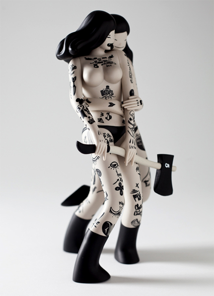
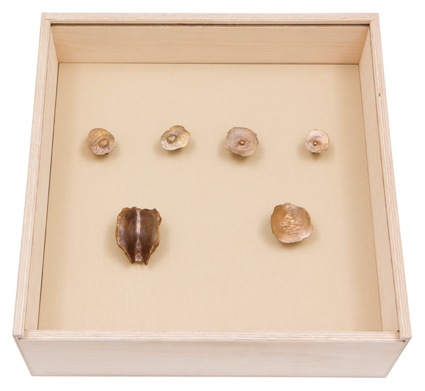
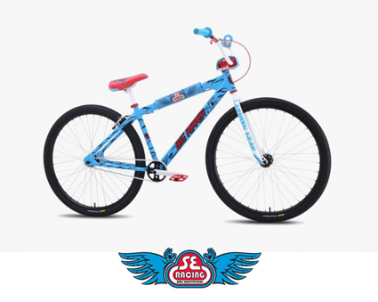
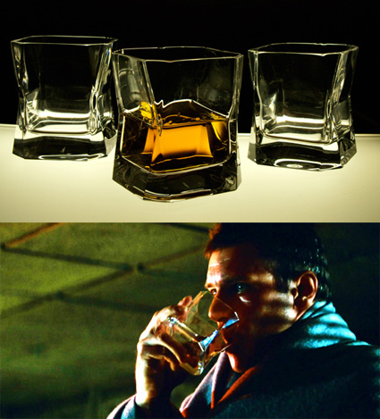
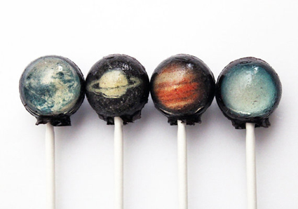
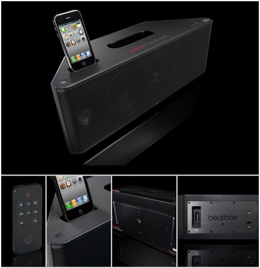
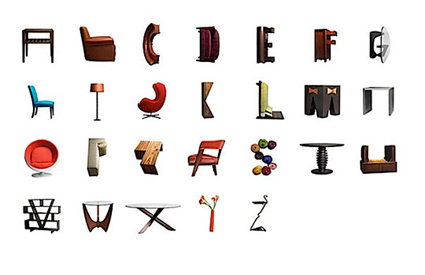
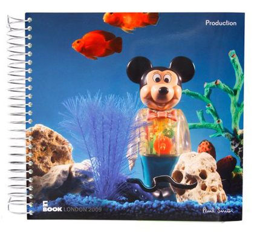

LES VIANDARDES BY MCBESS X KIDROBOT
Mathieu Bessudo, best known as McBess, is a London based French illustrator, 3D animator and character designer with an eye for detail and a mind for surreal rearrangement of ordinary things.
McBess’ detailed illustrations are cleverly blended with the cartoon styling of the early 20th century and often feature food and musical references, such as slick guitars, drums, amps, and other instruments.
The figure is 10 inches tall and is limited to 1,000 pieces.
Posted by Exit 04/11/13
mcbess.com

JBL PULSE LED BLUETOOTH SPEAKER
JBL releases the “Pulse,” a wireless Bluetooth speaker with programmable LED lights that react to your music. The system comes with five light schemes with many up for download online, so your visual experience will never be dull. The Pulse will play for five hours with light show and 10 without, thanks to a rechargeable lithium-ion battery.
Posted by Exit 28/10/13
jbl.com

TIM NOBLE & SUE WEBSTER
PORTRAITS FROM THE BOTTOM UP
Continuing to explore their investigation into self-portraiture Tim Noble & Sue Webster have produced work for Portraits from the Bottom Up including an edition of ten bronze works and a series of unique monoprints.
These sculptures are cast bronzes of the artists nipples and arseholes, wall mounted, to challenge the brain by reflecting the positioning of the eyes and mouth.
‘If they say that necessity is the mother of invention, then the original concept for this obscene series of body part prints was born from just that. During a residency on one of the most beautifully passive and colourful of the Caribbean Islands – we found ourselves banished in order to create. Unfortunately this idyll rendered us impotent and we retracted back into our darkened room and turned to our bodies for inspiration.’ Sue Webster.
Edition of 10 - Signed and numbered
Posted by Exit 21/10/13
www.othercriteria.com

3D AND THE ART OF MASSIVE ATTACK
Robert’s artwork has come to define the iconic style of his band and the book explores their visual history, presenting both familiar and previously unseen work, from his influential graffiti and stencil art in the Wild Bunch-era of the ‘80s to Massive Attack cover designs and paste-ups and paintings. Also included is work made in collaboration with Nick Knight, Tom Hingston, Judy Blame and Michael Nash Associates, as well as unseen photographs documenting Del Naja’s ongoing collaboration with United Visual Artists. And his recent work with filmmaker Adam Curtis.
The 400-page book also features an in-depth interview with the artist, where he describes the development of the band’s artwork and record sleeve designs, as well as offering insight into his processes, and inspirations.
Del Naja’s background as a graffiti artist has shaped his evolving aesthetic, as well as a strong ethos of ‘do it yourself’ creativity. His instincts as an artist were forged in an atmosphere of spontaneity and innovation - from making flyers to throwing warehouse parties - and this way of working informed the first record sleeves he created as 3D.
Inspired by magazine culture and comics, 3D drew on wide-ranging influences, from New York’s hip-hop scene and Japanese graphics, Jean-Michel Basquiat’s cultural juxtapositions to Warhol’s pop imagery, politics and punk.
3D and the art of Massive Attack is available to pre-order now; published October 28th, 2013.
Posted by Exit 14/10/13
www.vfeditions.com
TRANSCENDER FESTIVAL - BARBICAN, LONDON
NICOLAS JAAR PLUS EVIAN CHRIST WITH JOSHUA LIGHT SHOW
There was no doubting (at least in our minds) that Saturday night at the Barbican in East London was the hottest ticket in town. Nicolas Jaar, the New-York based Chilean-American electronic musician two years on from his debut album Space is Only Noise was performing, in collaboration with Joshua Light Show, including some of the original Woodstock-era team and Joshua White himself.
For most of the set, we remained seated. This was a performance that required concentration. Jaar used his voice sparingly, but it was at the points when his vocals cut across the track with smooth, old-school cool, that his music was at its cleverest and most mesmerising. From the middle of a ring of tech, plus vibraphone and – once – piano, he took us from serene to edging on dance in what seemed like one seamless piece of music. But dancing may just have pushed us over to full sensory overload, so intense was the experience.
The visuals felt like neither an accompaniment nor an afterthought, but a chance to get in on another act of creation. The team choreographed the light show live, using lasers, ink and shapes, smeared, flicked and beating across the screen. Describing their offering as ‘psychedelic’ doesn’t quite do them justice, although deep into the set you could find yourself losing track of what was following what – the music or the light. When Jaar first came to the mike to sing, accompanied by four female (and Londoner) choral voices, whilst red ink bubbled and bloomed high above him, it was almost impossibly beautiful.
Jaar was supported by Evian Christ (pseudonym of the UK producer and artist Joshua Leary), who also benefited from the fantastical visuals. He has previously worked with Kanye West on Yeezus, and you could recognise some of the intelligent hip-hop sampling. But this was a more unnerving and melancholy sound – with the incredible sound system in the Barbican hall only a further gift.
We finished on a treat: a thirty minute set – unannounced – from Darkside, Jaar’s collaboration with guitarist Dave Harrington, with tracks from their new album, Psychic, out on October 8. Although equally incredible, the extra person didn’t make Jaar’s previous work feel any less layered – testament to his talent as a solo artist.
Jaar was performing as part of the Transcender festival, an annual fixture at the Barbican for the last five years. Evolving out of the Ramadan Nights series, the festival intends to explore “spiritual, devotional and psychedelic music”, including contemporary and traditional, Western and non-Western artists, alongside new collaborations such as this one with Joshua Light Show. When we finally got up and danced for the encore, it did feel something like a religious experience. One thing is certain: someone at the Barbican seriously knows what they’re doing.
Words - Rosie Hore
Posted by Exit 07/10/13
www.nicolasjaar.net
www.barbican.org.uk
www.darksideusa.com
Nicolas Jaar (Live) - Barbican, London - 5/10/13
BNE X SHEPARD FAIREY - CHARITY: WATER
After selling out of their initial endeavor, BNE and Shepard Fairey have released an 18″ x 24″ version of the collaborative print. To raise money for charity: water with 100% of the print’s proceeds going to benefit the clean water-providing non-profit, the multicolored design is limited to just 400 hand-numbered pieces, each signed by both BNE and Fairey.
Posted by Exit 30/09/13
bne.org
JAPANESE CHAZUTSU TEA CADDIES BY KAIKADO
Kaikado is the oldest family owned maker of handmade tin tea caddies in the world, the family began producing their innovative Chazutsu caddy in 1875, using sheets of tin imported from Cornwall. Today four skilled craftsman led by Mr Yagi, Design Director, still make the traditional tin, brass, copper and silver caddies at the family run workshop in Kyoto.
Each caddy is made of two layers of metal, the double wall construction keeps the caddies completely airtight and the contents dry. With daily use the outer metal layer will change in tone and develop a unique patina; colour changes in copper being noticeable within three months and the tin caddy slowly changing colour over three to five years.
There are more than 130 highly skilled processes involved in the production of each caddy, many of which can only be carried out by Mr Yagi and his father. The special airtight feature has remained unchanged for over a century, production is time consuming and the finishing meticulous in its attention to detail.
Margaret Howell has selected three cylindrical caddies, available in tin and copper, as well as a special 200g tin caddy with a boxwood lid handle.
Mr Yagi will be demonstrating some of the processes involved in the making of a traditional Japanese Chazutsu tea caddy at the Margaret Howell Wigmore Street shop on Sunday 29th September.
Posted by Exit 23/09/13
www.margarethowell.co.uk
MARGARET HOWELL X OPEN HOUSE LONDON 2013
Margaret Howell continues to support Open-City, the architectural education charity founded by Victoria Thornton to raise awareness and appreciation of the urban landscape. Open-City actively promotes public engagement and education programmes, encouraging a dialogue about the built environment and urban regeneration projects. Established in 1992, the charity offered the public access to private and public buildings of architectural merit over a single weekend in September, many of the buildings were open to the public for the first time. The initiative was known as Open House Weekend, launched in London and now a global annual event across twenty cities including New York, Buenos Aires, Tel Aviv, Perth, Barcelona, Rome and Helsinki.
Margaret Howell has sponsored Open House London Weekend since 2003, supporting a number of buildings from the post war modernist movement designed by architects Margaret Howell personally admires, buildings have included The Royal Festival Hall, Swiss Cottage Library, Balfron Tower and Span Housing.
For this year’s Open House London Weekend (21 - 22 September) Margaret is supporting Battersea Power Station and encouraging the public to visit the building before the site is handed over to developers at the end of September.
Margaret has produced a series of postcards showing a selection of her favourite Open House buildings, the postcards will be available at Battersea Power Station and other key venues over the weekend. The postcards preview the creative concept for the Margaret Howell 2014 calendar, in which Margaret selects twelve buildings she has personally supported or visited since Open House London Weekend started in 1992. The calendar will be available in October and sold to support the work of Open-City, with all profits from the sale of each calendar being donated to the charity.
Posted by Exit 19/09/13
www.margarethowell.co.uk
www.londonopenhouse.org
VANS X FIRE-KING 2013 MUGS
Having partnered earlier in the year, Vans and longstanding glassware brand Fire-King rejoin for another collaborative set of mugs. The goal of this collection was to align the rich histories of both brands and shape them into a grouping of mugs that feature Vans’s iconic checkered print and ‘Off The Wall’ logo as well as Fire-King’s simplistically timeless aesthetic. Each mug will be packaged in the California brand’s original shoe box design.
Posted by Exit 16/09/13
vans.com
ORANGINA X ANDRE
Orangina teams up with prominent French artist ANDRE for a collaborative box set that includes a redesigned bottle. Granted free rein on this project, André Saraiva brought the European drink to his colorful and quirky universe with a bottom-heavy bottle that features one of his reoccurring characters.
Posted by Exit 09/09/13
www.orangina.com
MEDICOM BOBA FETT 400% BEARBRICK
Previously crafted in Kubrick, RAH and KAWS Companion form, iconic Star Wars bounty hunter Boba Fett returns for yet another Medicom Toy treatment – this time as a 400% Bearbrick. As per usual, the figure retains the character’s signature look while updating it with an ursine head. Standing 280mm tall and limited to just 1,000 pieces.
Posted by Exit 02/09/13
www.medicomtoy.co.jp
A BATHING APE X PEPSI - MOONFACE CAMO CANS
A Bathing Ape and soft drink conglomerate Pepsi extend their ongoing collaborative AAPE line into 2013. Succeeding their 2012 joint effort seen here nearly a year ago, the “MOONFACE CAMO” can returns in a matte red, white, blue and black camouflage print. The use of a matte finish is touted to feel texturally different when in hand.
Posted by Exit 26/08/13
www.pepsi.com
PARROT AR DRONE QUADRICOPTER POWER EDTION
Parrot has unveiled the latest version of the popular AR.Drone 2.0 quadricopter. Dubbed the Power Edition, the gadget runs on a set of two HD batteries and comes with four sets of colored propellers. Both iOS and Android users can control the chopper straight from their device as long as their within 165 feet of it. Shareable 720p HD videos and stills are captured from the sky, while flight data is saved, checked and shared with the online community.
Posted by Exit 19/08/13
www.brookstone.com
THE WALKING DEAD BOOK 9
In this volume of the New York Times bestselling survival horror, Rick and his band of survivors work to build a larger network of thriving communities. But Negan and his Saviours prove to be a larger threat than they could have imagined. Crossing them will lead to The Walking Dead's most harrowing story since the Governor's reign of terror. Collects issues #97 to 108, written by Robert Kirkman, with artwork and a cover by Charlie Adlard and Cliff Rathburn. Published September 2013
Posted by Exit 12/08/13
www.imagecomics.com
SLY & THE FAMILY STONE - THERE'S A RIOT GOIN' ON
This 24k audiophile gold disc reissue of Sly & The Family Stone’s classic There’s A Riot Goin' On is packaged in a deluxe box emblazoned with a unique embroidered flag cover and includes a 48 page hard cover book filled with photos and liner notes.
42 years after its original release Sly & The Family Stone’s fifth studio album is still praised as one of the greatest albums ever – including be ranked at number 99 on Rolling Stone’s “500 Greatest Albums of All Time.” Even noted (and oft-jaded) Robert Christgau upped the album to an “A+” rating in his Village Voice “Consumer Guide”(after his initial 1971 rating of “A-.”)
Posted by Exit 05/08/13
www.getondown.com
RON ENGLISH BIOHAZARD MOUSEMASK MURPHY
Inspired by pop culture’s most badass icon, Mr. Walter White from TV’s Breaking Bad, MintyFresh teamed up with Made by Monsters to give a biohazard rework to Ron English‘s classic Mousemask Murphy. Sporting a yellow biohazard suit and designed to reflect White’s status as a meth lab expert, the limited edition vinyl figure stands at 10 inches tall and just 100 pieces have been created.
Posted by Exit 29/07/13
www.sebikes.com
SE BIKES X SANTA CRUZ BIG RIPPER
For their 40th anniversary, Santa Cruz Skateboards teamed up with SE Bikes on a one-of-a-kind bike. The 29” Big Ripper features the iconic Screaming Hand blue colorway with the Speed Wheels Face graphic on the head tube, Screaming Hand shading elements scattered on the frame, the SC logo stamped in the rear dropout, a Santa Cruz 40 year anniversary logo embossed seat, and a padset featuring custom SE Hand logos drawn by the legendary Jim Phillips.
Included with each bike is a limited edition collaborative skate deck featuring a custom SE Hand decktop graphic with the classic Santa Cruz Screaming Hand design on the bottom.
Posted by Exit 22/07/13
www.sebikes.com
www.santacruzskateboards.com

RJ-K5 ASTROFRESH BASKETBALL DROYD
Joining two of the best things on earth, New York based Flowbot artist JK5 blends his passion for hoops and a certain George Lucas series to create the RJ-K5 Astrofresh Basketball Droyds. Available in 2 editions: the regulation orange colored Galactic Game Ball and the retro red, white, and blue Hyperspace All-Star, these figures are crafted of resin and stand 8.5-inches tall.
Posted by Exit 15/07/13
www.kidrobot.com
ZIPPO X LRG
LRG went another direction for their 4th of July pack, although the “Fingerblasters” brushed metal Zippo could certainly be employed in the act of lighting a BBQ in the summer heat. In this case, its an ode to lighting off fireworks, an activity just as necessary.
Posted by Exit 08/07/13
l-r-g.com
KRINK - NOAH MCDONOUGH PRINT
This meticulous drawing was created by Noah McDonough using a Krink K-70 marker on paper. The piece is done in Noah’s classic graffiti style and employs a stipple technique for shading and depth.
Krink have made a silkscreen print which is available now. Edition of 25, signed, numbered and dated
Posted by Exit 01/07/13
krink.com
MEDICOM GOOD GUY/CHUCKY 400% BEARBRICKS
Taking inspiration from the Child’s Play series, more specifically the Good Guy doll and his evil alter-ego Chucky. A straightforward reference to the classic cult films, the body is characterized by striped detailing with distinct facial and body detailing for each. The 400% iterations are set for a Japan-only release.
Posted by Exit 24/06/13
www.medicomtoy.co.jp
MONSTER CHILDREN X LEATHERMAN
In celebration of Monster Children‘s 10 year anniversary the brand decided to partner up with Leatherman for this very special, limited edition Sport Black Rebar Multi-Tool that comes with an embossed tan leather MAKR case crafted exclusively for the occasion.
Posted by Exit 17/06/13
monsterchildren.com
TOMMY HILFIGER SURF SHACK SURF BOARDS
Tommy is launching Surf Shack for SS13 - a limited edition capsule collection that pulls together the perfect beach ready wardrobe for men and women. The Surf Shack collection is complemented by a series of unique surfboards custom designed by five American Artists (Lola Montes Schnabel, Richard Phillips, Raymond Pettibon, Scott Campbell and Gary Simmons) The collaboration between Tommy and the artists is a continuation of Tommy’s work with the Art Production Fund (a non-profit organization dedicated to producing ambitious public art projects, reaching new audiences and expanding awareness through contemporary art). The surf boards will be sold in select Tommy stores
Posted by Exit 10/06/13
tommy.com
GLOBE X BEAVIS AND BUTT-HEAD
Designed as an homage to the heavy metal, in-your -face attitude of the original Beavis and Butt-Head series, the new Globe x Beavis and Butt-Head capsule collection brings together original and first time fans with product that is as fun as it is collectable.
Quality crafted 7-ply maple Globe x Beavis and Butt-Head cruiserboards and decks come in individual Beavis and Butt-Head shapes, each with original art by Mike Judge. The Beavis and Butt-Head Motley is a minimalist canvas shoe that features individual art derived from the show in the footbeds.
Posted by Exit 03/06/13
flipskateboards.com
FLIP SKATEBOARDS X IVAN MINSLOFF
Flip Skateboards have released a new deck series going by the name of “Odyssey” featuring the graphical work of Los Angeles artist Ivan Minsloff. Geoff Rowley, Arto Saari, Ali Boulala, Luan Oliviera and David Gonzalez have decks between 7.75 and 8.25 in width.
Posted by Exit 27/05/13
flipskateboards.com
THE JULIETTE SOCIETY - SASHA GREY
Sasha Grey was one of the most successful stars of the Hollywood porn industry. Since she left the adult movie world aged 21, Sasha has gone on to star in Entourage and Stephen Soderberg's film The Girlfriend Experience. The Juliette Society is her first novel.
Catherine, a blossoming film student whose sexuality has been recently stirred, finds herself drawn into a secret club where the world's most powerful people meet to explore their deepest, often darkest sexual fantasies.But even as these new experiences open intense new pleasures for Catherine, they also threaten to destroy everything she holds dear.
Posted by Exit 20/05/13
www.littlebrown.co.uk
BOOKMARC X KRINK
Bookmarc, the sub brand by Marc Jacobs that focuses on everything around books, has teamed up with Krink on a series of custom markers. The collection includes the K-12 Paint Marker, K-47 Permanent Ink Marker and the K-60 Paint Marker. Each one comes in a series of colors with custom Bookmarc branding.
Posted by Exit 13/05/13
www.marcjacobs.com
KAWS X BERN LIMITED EDITION HELMET
KAWS has teamed up with the New Museum Store and the Safe Street Fund to produce a limited edition version of Bern’s Watts bicycle helmet. The bicycle helmet features KAWS’ signature artwork in a subtle tonal print. Produced in a limited run of just 500, the helmet is available for pre-order now at the New Museum Store.
Posted by Exit 06/05/13
www.newmuseumstore.org
BOBA FETT ROCKET-FIRING 12" FIGURE
Digitally scanned from an authentic 3 3/4-inch Kenner prototype and reproduced at a substantial 12-inches tall, no detail has been overlooked. Injection molded and made of durable plastics, this ginormous figure comes fully articulated... and he includes real rocket-firing action! But that's not all.
The classic Kenner creation comes packaged on a 1979 Star Wars-inspired blister card featuring original photos and artwork, and including a re-sealable plastic outer clamshell to help protect and display the limited edition collectible on your wall, shelf, or favorite showcase! Unreleased back in the 1970s due to safety concerns, the few Kenner Star Wars Boba Fett Rocket-Firing Action Figures that found their way out of Kenner's factories are some of the most sought-after Star Wars collectibles in the world!
Posted by Exit 29/04/13
starwars.com
LAMBORGHINI AVENTADOR LP 720-4 50°
The Lamborghini Aventador LP 720-4 50°
Anniversario is a limited and numbered series of 100 units worldwide. Each unit has a Forged Composite® badge with the 50° logo and a serial number.
With its output increased to 720 hp, its new performance-oriented front and rear design, the special paintwork and unique interior trim, this Aventador is one of the most exclusive models ever produced in the history of Lamborghini.
The Aventador LP 720-4 50° Anniversario represents a new highlight of this globally successful model range with carbon-fiber monocoque, twelve-cylinder engine and permanent all-wheel drive. With its output of 720 hp, the 6.5-liter twelve-cylinder in the Aventador LP 720-4 50° Anniversario is 20 hp more powerful than the current V12 in the Aventador LP 700-4. This is due to a new specific engine calibration. With its extremely fast-shifting ISR transmission, the anniversary model accelerates from zero to 100 km/h in 2.9 seconds and reaches a top speed of 350 km/h.
Posted by Exit 22/04/13
www.lamborghini.com
ORIGINAL FAKE MINI DARTH VADER AND STORMTROOPER
After having released the actual Darth Vader and Stormtrooper KAWS toys from the Star Wars franchise a while back, OriginalFake previews this week the upcoming mini versions of the two character toys. Releasing on April 27th, 2013.
Posted by Exit 15/04/13
www.original-fake.com
CINELLI WATER BOTTLES BY BARRY MCGEE
The West Gallery of the Institute of Contemporary Art (ICA) in Boston, MA plays host to a new mid-career survey of influential San Francisco–based artist Barry McGee. McGee’s “Drawing from the Street” exhibition includes a run of early, unseen works alongside videos, 3-D drawings, paintings, photography, and more.
Alongside a catalog that is available from the ICA Store, a few limited edition items have been produced to celebrate the opening of “Drawing from the Street.” These two limited edition water bottles, produced by Cinelli, feature Barry McGee artwork.
Posted by Exit 08/04/13
www.icaboston.org
TAMASHII NATIONS DAFT PUNK FIGURES
From Tamashii Nations, the premium collectible line of Bandai Japan, comes this pair of Daft Punk figures. Featuring Guy-Manuel de Homem-Christo and Thomas Bangalter in their signature uniforms and helmets, the collectible figures stand approximately 15 cm tall and feature precise articulation for all manner of poses. The signature helmets feature a shiny metallic finish for added realism while the clothing features realistic creasing and bunching.
Posted by Exit 01/04/13
tamashii.jp
SPACIOUS SPACE TENT BY FIELD CANDY
Space: the final frontier. With its amazing views of a distant galaxy, this design is certainly set to stun. Climb inside and imagine you’re light years from home exploring the outer reaches of space. But don’t let any of those horrible alien thingies inside - they make a terrible mess.
Spacious Space Tent is limited to 195 pieces.
Posted by Exit 25/03/13
www.fieldcandy.com
LANCE MOUNTAIN BRIGADIER DECK
During his early years as a Pro skater Lance Mountain always wanted his own skull graphic like the rest of the Brigade, but circumstances and timing didn't line up in his favor. The Pro model that Lance never got is now made possible by Flip and it's not a Re-Issue, it's the Non-Issue!
Lance's Flip 'Brigadier' deck is 9.5" X 32.78" featuring custom wheel wells from the early 80's and designed to be fully functional for 2013.
Posted by Exit 18/03/13
flipskateboards.com
HERMES X JAEGER-LECOULTRE ATMOS CLOCK
The relationship between Hermés and Jaeger-LeCoultre dates back nearly a century, when the first Hermés timepieces were supplied with Jaeger movements. In the late ’70s, however, the iconic French fashion house began producing its own time-keeping products, effectively halting a decades-old partnership with the Swiss horologists. It was something of a revelation then, when Jaeger-LeCoultre announced its latest collaborator as none other than Hermés, the result of which is a new iteration of the legendary Atmos Clock. The glassblowing specialists created an air-blown, double-layer glass dome cut to create a dotted exterior, a breathtakingly beautiful shell that allows for a glimpse at the clock’s JLC-caliber 560a Atmos movement. In a limited quantity of 176.
Posted by Exit 11/03/13
hermes.com
www.jaeger-lecoultre.com
POST APOCALYPSE DUNNY - HUCK GEE SERIES
After the fallout clears, vinyl still stands. San Francisco artist Huck Gee resurrects Dunny with 13 post-apocalyptic designs featuring zombie hunting ninjas, cyborg geishas, evolved apes, mecha troopers, feral foxes, radiated rhinos, and super fly copter kids. Hyper detailed sculpts and crazy complex accessories push the boundaries of 3 inch vinyl to create characters that are built to survive.
Posted by Exit 04/03/13
www.kawsone.com
KAWS COMPANION - RESTING PLACE (BLACK VERSION)
KAWS has released a black version of his Companion Resting Place vinyl figure, after only dropping the grey version a few days back. The black/multicolor version will release on Kawsone.com today at noon EST, and as usual you will have to be very quick.
Posted by Exit 26/02/13
www.kawsone.com
KAWS COMPANION - RESTING PLACE (GREY VERSION)
OriginalFake releases a new KAWS Companion toy. Entitled “Resting Place,” the 9-inch vinyl figurine depicts Companion as a figure divided in half. One half sees a grey and white-edition Companion, while the other gives a glimpse into the innards of the iconic character.
Posted by Exit 25/02/13
www.kawsone.com
TOYMASTER WAR JOURNALIST ACTION FIGURE
From the Hong Kong toymaker Toymaster comes a new figure, the War Journalist Battlefield Hero Action Figure. It comes with an actual mini DSLR kit with a body, three lenses, lens hood and camera bag. The photographer comes with a multiple change of clothes - sweater, shirt, vest, pants, boots, sunglasses and more.
Posted by Exit 18/02/13
www.toyqube.com
DINOS CHAPMAN - LUFTBOBLER
Limited to 300 copies worldwide, this edition includes an exclusive coloured etching by Dinos Chapman, individually tipped in, with five colour screen printed artwork across four bespoke panels. Each sleeve has been hand signed and numbered by the artist.
Written and produced by Dinos Chapman, the album's 13 tracks have been mastered for vinyl and pressed on two 180-gram heavyweight, hand-etched records.
This edition also contains an additional one-sided 12" vinyl pressing of an exclusive bonus track, which will never be subsequently released on any format.
Brimming with subversive energy, searing wit and gallows humour, 'Luftbobler' consists of 13 tracks of electronic music - created at Dinos Chapman's basement studio in East London; the result of a decade of experimenting with sound.
Posted by Exit 11/02/13
www.vfeditions.com
CHROME NIKO CAMERA PACK
The Niko pack was designed and built for day shooting and travel with a tough weatherproof denier nylon outer shell and military grade truck tarpaulin liner. It has a fully customizable interior compartment for lenses and flashes and multiple pockets for cable and gear storage. Other features include quick access top loading compartment for items like a windbreaker or phone, a padded laptop compartment that fits up to 15” Macbook Pro, front Velcro straps for securing a tripod or skateboard, and side access u-lock holster.
Posted by Exit 04/02/13
www.chromebagsstore.com
SIGNAL SNOWBOARDS X LEATHERMAN TOOLS
Signal Snowboards combine with multi-tool expert Leatherman to create two models of snowboard tools, the Hail and the Rime. The carabiner-shaped tools feature a scraping edge, #3 flat/Phillips head bit, headphone wrap, lace assist, headphone storage, and of course, a bottle opener for post-snowboarding refreshments. The $25 Rime features support for an iPod shuffle to be clipped into it, while the $45 Hail model also features an optional Style PS multitool that docks inside the clip.
Posted by Exit 28/01/13
www.leatherman.com
www.signalsnowboards.com
Y-3 MEN'S FRAGRANCE - BLACK LABEL
On January 19th, 2013 Yohji Yamamoto and adidas celebrate ten years of Y-3 with the introduction of Y-3’s first men’s fragrance, Black Label.
“The fragrance opens with a masculine sparkling accord of cardamom and elemi associated with a modern touch of Tagete. The heart reveals an elegant mix of Virginian Cedar Wood and Lavandin supported by the sensual warmth of black pepper.
The wake releases the captivating power of Patchouli, Vetiver and Tonka Bean which gives the fragrance its unique character.”
Black Label will come in a 75ml bottle and will debut in February this year. The fragrance will be available in Y-3 flagship stores and online.
Posted by Exit 21/01/13
Y-3
ORIGINALFAKE KAWS BOBA FETT COMPANION
Intergalactic bounty hunter Boba Fett is the latest subject to receive a KAWS Companion makeover courtesy of Medicom Toy and OriginalFake. Fett’s vinyl rendition mates KAWS signature look with the Mandalarian’s iconic armor; complete with battle damage. The limited edition figure is said to be a Japan exclusive and will arrive at OriginalFake Tokyo on January 26th.
Posted by Exit 14/01/13
www.original-fake.com
DANNY KASS X UNION SNOWBOARD BINDINGS
The Union Custom House Danny Kass binding is an exhibitionistic beauty. With a Wet T-Shirt Contest on one highback, and No T-Shirt Contest on the other, you won't have to do Spring Break in Cancun to "make party" with these beauties. Your friends will love them, your mom with not approve, and above all - they're designed to meet the standards of a five-time US Open champ with two Olympic medals.
Posted by Exit 07/01/13
www.unionbindingcompany.com
PETE FOWLER'S 2000AD NEMESIS FIGURE
Pete Fowler's version of Nemesis The Warlock from Unbox Industries has been approved by creater Pat Mills himself!
Nemesis stands 15cm tall and features and is non-articulated.
Posted by Exit 31/12/12
www.unboxindustries
MARLEY COFFEE
Marley Coffee is an international gourmet coffee company founded by Bob's son Rohan Marley and his friend Shane Whittle, sourcing beans from around the world, including Ethiopia, Central America and Jamaica. The beans from Jamaica are from a 52-acre private estate sits atop the Blue Mountains in Chepstowe, Portland, Jamaica, long revered as the region with the world's most desirable coffee beans. From the Marley's Jamaica Blue Mountain® coffee farm, to partner farms in Africa, Central America and other top coffee-growing regions worldwide, Marley Coffee strives to support communities and the environment through organic, sustainable and ethical practices.
Posted by Exit 24/12/12
www.marleycoffee.co.uk
STAR WARS - THE ULTIMATE ACTION FIGURE COLLECTION
Here at last is the complete and definitive collection of the more than 2,500 Star Wars action figures produced over the last 35 years. Compiled by Stephen J. Sansweet, owner of the world's largest private collection of Star Wars memorabilia, the book also showcases and details the rare, popular, forgotten, and beloved figures. The characters are listed alphabetically by their first name, rank, or title, and then by date of release.
Posted by Exit 17/12/12
www.ranchoobiwan.org
STEALTH-X CARBON FIBRE SLED BY SNOLO
The Stealth-X is predominantly built of carbon fibre and comprises three main parts. The mono shell, the front ski and the front arm.
The mono shell is made of carbon fibre. It is contour molded to comfortably fit your lower body and has a foam padded seat in the base with a flip up padded back rest. A great feature of the Stealth-X is the ability for the front ski to be removed and slotted in to the mono shell, so the entire sled can be worn as a backpack, making it ideal for back country exploring.
Posted by Exit 10/12/12
www.snolosleds.com
TARGET BY LUKE CHUEH
Target is based on the classic painting by Luke Chueh. The highly detailed bullet-ridden backdrop contrasts with the minimalist aesthetic of Luke's iconic bear, creating a truly unique art piece. Comes with removable brush and bucket and packaged in a box featuring Luke's revisit of his original illustration. For a more seamless look, the walls are designed to interlock with each other to create one long continuous shooting range
Posted by Exit 03/12/12
www.lukechueh.com
BLK LTD x THRASHER SKATEGOAT RING
Legendary Skate publication, Thrasher Magazine joined forces with BLK LTD to release a branded ring. Available in three sizes, the ring boasts Thrasher‘s iconic Skategoat logo and was constructed by hand in the United States from nickel clad.
Posted by Exit 26/11/12
blk-ltd
LAMBORGHINI AVENTSDOR LP-700-4 ROADSTER
Lamborghini unveil the roadster version of the Aventador. Its arrival comes just over a year after the introduction of the Aventador Coupe. The Aventador Roadster’s roof is made from solid carbon fiber and relatively simple to put up and take down. Weighing less than 6 kgs (13 lbs) in total, the two roof pieces can be stowed in the front luggage compartment when not in use.
The Roadster’s windows have chamfered edges in order to fit perfectly with the edges of the hard top. Moreover, its bodywork sports a two-tone paint, with the roof and the upper area up to the “fins” finished in gloss black.
The color palette has been increased by the addition of the new “Azzuro Thetis” light blue paint that, according to the company, harks back to the 1968 Miura Roadster. Finally, as far as the exterior is concerned, the Aventador Roadster is fitted with “Dione” forged alloy rims, which weigh 10 kg (22 pounds) less, and measure 20 and 21 inches in diameter front and rear respectively.”
Posted by Exit 19/11/12
www.lamborghini.com
RON ENGLISH TEMPER TOT
Temper Tot is the newest vinyl creation from Ron English.
Standing 8", he is one of Ron's most recognizable characters, having been portrayed through Ron's gallery paintings and street art. Temper Tot, half infant, half hulk, signifies that combustible amalgamation of unbridled id and unbounded brawn.
Posted by Exit 12/11/12
www.popaganda.com
OAKLEY AIRWAVE GOGGLES
Oakley Airwave Goggles combine the company's best goggle technologies with a heads-up display that integrates GPS, Bluetooth, and more with a host of onboard sensors to bring new possibilities to your alpine experience. Now in the midst of skiing and other alpine sports, you can access a full range of information transmitted directly to your eye with the benefits of Oakley's world-class optical performance, comfort and protection.
Posted by Exit 05/11/12
oakley.com
ORIGINAL FAKE SNOOPY CERAMIC (KAWS VERSION)
In time for Halloween Original Fake has teamed up again with the Peanuts franchise and presents the Snoopy Ceramic jar ‘KAWS Version’. Snoopy lies on a pumpkin - both the Pumpkin and Snoopy received the Kaws ‘X’ eyes treatment.
Posted by Exit 29/10/12
www.original-fake.com
BLADE RUNNER CIBI DOUBLE WHISKEY GLASS
As used by Deckard in the cult 80's sci-fi movie Blade Runner, whilst drinking Johnny Walker Black label.
It is made from hand-made crystal glass, mouth-blown by artisans at boutique Italian company, Arnolfo di Cambio and designed by Cini Boeri in 1973.
Posted by Exit 22/10/12
www.arnolfodicambio.com
www.htfw.com

BEATS BY DR DRE PILL BLUETOOTH WIRELESS SPEAKER
Beats By Dr. Dre introduces the Pill. Meant to offer the big sound of the signature headphones in a compact, portable speaker package, the wireless Pill features both auxiliary input and output via standard 3.5mm connections while also offering Bluetooth capabilities for connections of up to 30 feet with any enabled device. Available in either black, red or white.
Posted by Exit 15/10/12
www.beatsbydre.com
CHAPMAN BROTHERS X SUPREME SKATEBOARD DECKS
In their latest collaboration New York’s Supreme gets together with the Chapman Brothers on a series of skateboard decks.
Jake and Dinos Chapman are English visual artists, commonly known as the Chapman Brothers. Since 1991 they have been working together as a collaborative sibling duo. Both studied together at the Royal College of Art, during which time they worked as assistants to the renowned artistic duo of Gilbert & George.
They will be available in-store in NY, LA, London and online October 11th and in Japan on October 13th.
Posted by Exit 08/10/12
www.supremenewyork.com
www.jakeanddinoschapman.com
MONTANA MTN X KRINK K-750
Krink NYC and Montana Colors Barcelona (MTN) have released the MTN x Krink K-750, a very special can with unique properties. Years in development, the K-750 is a complete can-redesign utilizing select valves, pressure, paint, and nozzle; truly one of a kind, there is no competition.
The K-750 contains a massive 750ml/25oz of premium quality matte finish paint and is capable of creating lines 4M/12’ tall! A unique Krink concept paired with Montana’s advanced engineering, the K-750 sets a new standard in innovation. Krink and Montana Colors continue to design fresh and original products for today’s art-supply market and are committed to new ideas for an ever growing creative-community worldwide.
Posted by Exit 01/10/12
krink.com
montanacolors.com
LEGO X MARVEL / DC COMICS 2013 SUPER HEROES
For 2013 LEGO is going to update their Super Hero minifigs line with additional characters from the DC and Marvel universe. The new collection includes characters from the recent The Dark Knight Rises movie.
The figures from DC comics universe included in the set are Mister Freeze, Aquaman, Batman in White Suit, Bane, Commissioner Gordon with a SWAT Flack Jacket, Hooded Robin, Scarecrow, Joker, Penguin and Harley Quinn in a Nurse Outfit.
The figures from Marvel comics universe included in the set are Spider-man, Venom, Nova, J. Jonah Jameson, Doctor Doom aka Victor Von Doom and Beetle.
Posted by Exit 24/09/12
www.lego.com
SOLAR SYSTEM HARD CANDY LOLLIPOP
These lollipops are edible images of the planets of our Universe. You can choose between strawberry and cotton candy flavor and will get a batch of 10 pieces featuring Sun, Mercury, Venus, Earth, Jupiter, Saturn, Uranus, Neptune, and Pluto. The backs of the pops are black flecked with silver edible glitter that simulates the stars.
All lollipops are individually wrapped and sealed. Pops are poured onto 4.5" white paper sticks. They stand approximately 4" inches high in all.
Posted by Exit 17/09/12
VintageConfections

NEIGHBORHOOD BEARBRICK 400%
Medicom Toy is to release a bearbrick designed by Japanese menswear brand NEIGHBORHOOD.
Donning a predominately matte black look with translucent ears, the toy sports NEIGHBORHOOD branding throughout, including the brand’s skull and crossbones across the chest.
Posted by Exit 10/09/12
www.bearbrick.com
www.neighborhood.jp
CAMPBELL'S SOUP CELEBRATES ANDY WARHOL
To celebrate the 50th anniversary of Andy Warhol’s work, “32 Campbell’s Soup Cans,” Campbell’s is releasing a series of limited-edition tomato soup cans. Printed with art and sayings by the late artist, the cans will be released at Target stores starting Sunday, Sept. 2, 2012. The limited edition Andy Warhol Foundation approved containers come in four colorways and are set to cost 75 cents each. Limited to 1.2 million cans only!!!
Posted by Exit 03/09/12
www.campbellsoup.com
www.warholfoundation.org
BREATHE MINI BILLBOARD BY RON ENGLISH
The first in a new series of Mini Billboard releases features the infamous "Breathe" artwork. First seen in 2005 on a life size billboard in Jersey City, this satirical poke at the tobacco industry is limited to just 30 pieces (worldwide).
Stands at 9.5" tall and will be signed and numbered by Ron English
Posted by Exit 27/08/12
www.popaganda.com
KAWS COMPANION RESTING PLACE FIGURE
New upcoming KAWS Companion Resting Place Figure. The Companion remains to be one of the most iconic characters to ever be created by the artist and the Companion toys have also always been a big success.
Posted by Exit 20/08/12
www.kawsone.com
#ADIDASUNDERGROUND: CROOKED TONGUES - DAY 11
Adidas joined forces with frequent collaborators Crooked Tongues to host a night celebrating classic running shoes, the sneaker culture and good music with some free drinks, assuring things were flowing smoothly. The accompanying audio background was provided by London-based music collective Livin’ Proof who offered an eclectic selection of the best of hip-hop sounds in the past twenty years, ranging from DMX, Warren G, A$AP Rocky, Kendrick Lamar, just to name a few. The celebration was a worthy conclusion of a remarkable #adidasundeground’s ambitiously unique event series that celebrated and honored the close cultural relationships between sports, music, fashion, and arts.
Posted by Exit 13/08/12
adidasunderground.com
#ADIDASUNDERGROUND: RWD - DAY 10
#adidasunderground partnered with RWD magazine and opened its opened its gates in Shoreditch, London for #takethestage – another unforgettable night full bass-heavy beats and rhythmic actions on the dancefloors. The space, which has already been home to nine nights’ events of a different kind, has been transformed once again and offered a welcoming and energetic environment. Some of the genre’s biggest names, such Maxsta, Devlin, Wretch 32, Ryan Martelo, DJ Target, DJ Chewy, and many more took over the live stage.
Posted by Exit 12/08/12
adidasunderground.com
#ADIDASUNDERGROUND: FRANCOIS K - DAY 9
DJ, producer, and record label owner François Kevorkian graced the 1s and 2s. Catering the crowd with a fine selection of eclectic sounds that encompassed genres like jazz, soul, blues and more, the New York City resident perfectly laid down the audio foundation for this musical extravaganza that was further enhanced by a multi-channel sound system, a hypnotic light show and three-dimensional projections on the walls. Clearly swaying away from your average dancefloor-frenzy with conventional sound patterns, this special ‘Surround Sound Lounge’ event was something for those that appreciate and understand the essence of music.
Posted by Exit 11/08/12
adidasunderground.com
#ADIDASUNDERGROUND: GREEN SOCCER JOURNAL- DAY 8
As the 2012 Olympics are enjoying the attention of global media, and everyone expecting an intense showdown between Brazil and Mexico on Sunday’s soccer finals of the games, #adidasunderground partnered with London publication The Green Soccer Journal to honor the world’s most popular game to a smaller dimension. Hence, the #adidasunderground space in Shoreditch, London opened its gates again and invited the masses to showcase their skills in foosball skills. Similar to The Green Soccer Journal‘s unique approach to cover the culture behind the world’s game, last night’s event provided an uplifting and eclectic ambiance backed with smooth yet energetic urban sounds, and an abundance of snack and drinks that enhanced the athletic experience for the participants.
Posted by Exit 09/08/12
adidasunderground.com
#ADIDASUNDERGROUND: MONIKER - DAY 7
After the last two events from #adidasunderground festivities celebrated music with the help of illustrious folks like The Stone Roses, Factory Floor and more, the attention of last night’s gathering moved to the sublime art of graffiti. Arts-based company Moniker Projects partnered with #adidasunderground in order to invite the crowd to witness an exclusive cinematic experience which included a screening of short films from artists and curators Futura, Retna and Aaron Rose as well as the UK premiere of A Love Letter For You, the latest film by renowned director Joey Garfield.
Posted by Exit 07/08/12
adidasunderground.com
#ADIDASUNDERGROUND: THE STONE ROSES - DAY 6
It was a truly memorable night of British rock. Hands down the most epic of the nights thus far at the ongoing #adidasunderground venue in Shoreditch, London, a surprise invite-only concert welcomed iconic Manchester band, The Stone Roses to its stage last night. Maybe it was the fact that frontman Ian Brown and the band were playing to an extremely small crowd of about 600 people that made the event so special. Or perhaps the even more unbelievable part about the show was the fact that it was easily the most intimate crowd the band has entertained in well over a decade.
Posted by Exit 06/08/12
adidasunderground.com
#ADIDASUNDERGROUND: FACTORY FLOOR LIVE - DAY 5
Continuing with its music-centered modus from the past few nights, #adidasunderground welcomed London-based band, Factory Floor, to its stage last night for a special live performance. The private event ushered in patrons to the expansive space which had been reimagined slightly from the previous nights placing the stage and DJ booth in the center of the room. After opening its doors at around 9:00 p.m., the crowd began to slowly build into a full capacity audience as the 11:30 p.m. headline act took to the stage.
A room that just 30 minutes previous had been characterized perhaps better by, “mood lighting” was rapidly plunged into a wall-to-wall psychedelic visual experiment of pulsating patterns, pixelized shapes and chromatic geometry. Laying into the drums, synthesizers and noise machines, each element played its roll in bringing the sounds to life through the surround sound system-equipped venue.
Posted by Exit 05/08/12
adidasunderground.com
#ADIDASUNDERGROUND: CHEMICAL BROTHERS - DAY 4
The space played host to an incredibly immersive and fully experiential showing of The Chemical Brothers' DON'T THINK film. The film, which was originally captured in last year at Japan's Fuji Rock Festival, was captured on an intricate amalgam of over 21 camera that were positioned throughout the over 50,000 person crowd. The film's director, Adam Smith, was able to capture the ridiculously "mind-bending" audio-visual live show that is so characteristic of The Chemical Brothers.
For #adidasunderground, the challenge was to take the film, which captures an already intense barrage of lights, sound and music, and augment it in such a way that does the film justice as opposed to detract from the experience. They did just that. Plastered across the sweeping HD screens of the transformed space, the film was paired with a sound system that made you forget that you weren't actually witnessing the events live and an array of lasers and lights that effectively mimicked the live show's timing and sequence.
With over 50 make-up artists on hand, the #adidasunderground team took it a step further by requiring all entrants to paint their faces like clowns to mimic the film's footage.
Posted by Exit 04/08/12
adidasunderground.com
#ADIDASUNDERGROUND: VOLT PARTY - DAY 3
Heavy bass - check. Smoke machines -check. Multi-projector visual experience - check. The stage was set last night perfectly as the doors opened at Shoreditch’s #adidasunderground for a special Volt party. A scene that would make any passer-by jealous they weren’t in the door Queue already, the occasion kicked off to a fully stocked house. Throughout the night, the multi-dimensional visuals would play host to special screenings of Mark James‘ This Dull Ache film as well as a visual barrage by Night Customer and a Joost Vandebrug special film screening.
Posted by Exit 03/08/12
adidasunderground.com
#ADIDASUNDERGROUND: SAM BLAIR FILM - DAY 2
Centered around the training and story of some of Britain’s Olympic hopefuls, the film captures an element that is perhaps too often underexposed once the four-year summer Olympics roll around and the worldwide television coverage cues up — hardwork. Following the athletes through the various emotion rollercoasters and daily training regimens, Personal Best brings to light the humbling reality of the life of Olympic sprinter hopefuls in the years leading up to what they hope is there 10 seconds of fame.
Perhaps a reflection of his own investment in the project, Personal Best began as a school project for Blair during his time at the National Film and Television School in London. With a strong affinity for documentary filmmaking, Blair was tapped by adidas to extend what began as a 17-minute school project, into a full-length feature - his first feature film.
Posted by Exit 01/08/12
adidasunderground.com
#ADIDASUNDERGROUND: ROLLAPALUZA - DAY 1
The crew from adidas have transformed an unassuming warehouse space within the Shoreditch area of London as a means to play host to both locals and travelers looking for a nice change of pace from the other chaos that has hit the city.
While athletes are right at this moment prepping for various games, a unique competition began to take shape last night in Shoreditch, as the #adidasunderground-hosted event kicked off a bout of two-week-long festivities with a little bit of Rollapaluza Roller Racing madness.
Rollapaluza pits two stationary bicyclists together in a head-to-head round to see who is the fastest. With plenty of drinks to go around, music turned up, and no shortage of cycling camaraderie, the first day of #adidasunderground has set a good trajectory for what can be expected from the ongoing events.
Posted by Exit 31/07/12
adidasunderground.com
TOM FORD NOIR
Tom Ford Noir, coming this October 2012, is the third men’s fragrance taking its place next to 2007′s Tom Ford for Men and 2009′s Grey Vetiver. Noir features hints of bergamot, verbena, caraway, baie rose, violet flower, black pepper, nutmeg, iris, geranium, rose, clary sage, opoponax, amber, patchouli, vetiver, civet and vanilla.
Posted by Exit 30/07/12
www.tomford.com
BEFORE WATCHMEN
Before Watchmen is a series of comic books to be published by DC Comics. Acting as a prequel to the 1986 12-issue Watchmen limited series by writer Alan Moore and artist Dave Gibbons, the project will consist of seven limited series, Rorschach, Minutemen, Dr. Manhattan, Comedian, Silk Spectre, Nite Owl, and Ozymandias. As well as an epilogue one-shot.
Posted by Exit 23/07/12
www.dccomics.com
FUTURA X HENNESSY LIMITED EDITION BOTTLE
Hennessy continues on its intersection of spirits and art with Futura the latest to join the movement. The original project established its presences thanks to a KAWS collaboration last year.
Futura and Hennessy share a passion about the meeting of art and function. To create his limited edition bottle, Futura drew inspiration from Cognac’s warm color palette, incorporating abstractions of his signature atomic motif and adapting his eye-catching use of line and shape to a new experience.
Posted by Exit 16/07/12
www.hennessy.com
GHOSTBUSTERS STAY PUFT MARSHMALLOWS
Stay Puft Marshmallows, the classic brand featured in the Ghostbusters movies has been redesigned and re-launched as a consumable perfect for the Ghostbusters. 'The premium bite-size marshmallows, which are the whitest, fluffiest vanilla marshmallows available, are vacuum-packed inside a new collectible 2 sided 5oz box that features both the happy and angry Stay Puft Marshmallows Man on either side.
Posted by Exit 09/07/12
www.ghostbusters.com
THE WALKING DEAD - SEASON 2 - LIMITED EDITION BLU-RAY
The Walking Dead will release its second season in a limited edition Blu-ray boxed set this coming August. The zombie head is presented with a screwdriver lodged in its eyeball, tilt the head back to reveal the discs locked inside it's gored head. The zombie statue is created by McFarlane Toys and designed by Greg Nicotero.
The 4-Disc set will contain all 13 episodes of the second season and will be loaded with exclusive behind-the-scenes footage, featurettes and audio commentaries.
Posted by Exit 02/07/12
the-walking-dead
MARC JACOBS - MUSCLE MAN MARC - SOUTH PARK DOLL
Back in November of 2011, Cartman had a tea party that featured a shirtless Marc Jacobs doll called "Muscle Man Marc," whom he called upon to help find his favorite doll, Clyde the Frog. This appearance on South Park marked the first of a fashion designer on the show, and since then Mr. Jacobs has immortalized that appearance with T-shirts supporting the show and now a real-life version of that same doll.
The 12" plush "Muscle Man Marc" Jacobs doll is limited to 500 pieces and is now available online for purchase.
Posted by Exit 25/06/12
www.marcjacobs.com
DJ FOOD & HENRY FLINT TEATOWEL
In conjuction with the DJ Food & Henry Flint exhibition at Factoryroad, the 'house-that-got-turned-into-a-gallery', they have produced that most domestic of items, a souvenir tea towel.
Only this one has slightly different qualities in that it can, of course, be used to polish your space helmet, visor or instrument panel, as well as being an excellent tool for removing excess water from recently-washed dishes.
Printed in chocolate brown and coppery gold, it bears the date of the show and comes wrapped in a band showing a monochrome Skullstronaut. Screen printed in Factory Road and hand-sewn.
Also available limited edition ‘Skullstronaut’ giclee print and locally sourced chocolate bars, cleverly playing on the outer space theme and packaged like freeze-dried astronaut food.
Posted by Exit 18/06/12
factoryroad.bigcartel.com
www.djfood.org
henryflint.wordpress.com
MARGARET HOWELL ERCOL CHAIRS
Browse the Margaret Howell website and you’ll discover a wide collection of home goods including these Ercol reissue chairs exclusive to the MHL line from back in 2002. Four total chairs received the reissue treatment including their butterfly, stacking, love seat and trio.
Posted by Exit 11/06/12
www.margarethowell.co.uk
A BATHING APE X TRANSFORMERS - OPTIMUS PRIME
For Summer 2012 the Japanese brand presents the new ‘black edition’ of the coop. Convoy is the Japanese name for the Optimus Prime character. Here in this new edition it comes in a black colorway, featuring signature Bape graphics, including the iconic camouflage.
Posted by Exit 04/06/12
eu.bape.com
MASTERMIND JAPAN X HERMAN MILLER
Mastermind Japan has produced a collaboration with Herman Miller Japan. Sticking to its black theme, the Japanese brand, which is entering its last season of operation, has worked on the classic Eames chair and a small matching table. Both pieces feature subtle branding. Limited to 120 pieces each.
Posted by Exit 28/05/12
www.mastermindjapan.com
KIDROBOT X PARRA - PIERCED FIGURE
Kidrobot teams up with Dutch graphic designer Parra to present the artist’s take on romance novel covers with this 10-inch tall figure named Pierced. A couple of Parra’s characters are merged together in an embrace with one character plunging its beak into the other’s neck. These will be limited to 300 pieces and they will release on June 7th
Posted by Exit 21/05/12
www.kidrobot.com
ROYAL MAIL GREAT BRITISH FASHION STAMP SET
The Royal Mail service launches their latest theme collection of official stamps. The “Great British Fashion Stamp Set” collects garments and styles from 10 local fashion houses including Paul Smith, Vivienne Westwood, Alexander McQueen. All photographed by Sølve Sundsbø.
Posted by Exit 14/05/12
royalmail.com
ORIGINAL FAKE 6TH ANNIVERSARY 1000% BEARBRICK
First presented during the most recent World Wide Bearbrick Tour, the Original Fake 1000% Bearbrick, seen here, will actually be released. For the 6th anniversary, the toy will drop in a limited edition. The toy features the signature round Chompers design by artist Kaws.
Posted by Exit 07/05/12
www.original-fake.com
www.bearbrick.com

RANGE ROVER EVOQUE - VICTORIA BECKHAM EDITION
The new limited edition Victoria Beckham edition of the Range Rover Evoque has been unveiled. Having made its debut in Beijing, China, the already popular city off-roader by the English brand is getting another highlight with this new limited edition.
Wife of David Beckham and a fashion designer herself, has designed a powerful and sporty version of Evoque. It comes with a matte hand-painted finish, 20″ wheels with rose gold accents, a hand-stitched tan semi-aniline leather interior, a bespoke four-piece luggage set, an 825 watt 17 speaker Meridian sound system and comes with a turbo-charged 2.0 liter engine with 237 hp. Both interior and exterior look amazing. If you want one, you have to act fast, as the car is limited to only 200.
Posted by Exit 30/04/12
www.landrover.com
JUN WATANABE X TAMIYA RC CARS X THE HORNET
Fashion designer Jun Watanabe has designed a scheme for The Hornet by Tamiya RC cars. This is a special model with purple chassis parts, white springs, pink wheel nuts and various other coloured parts as designed by Jun Watanabe. The body design features a black polka dots on white base. Tire & Wheels, includes standard black and white wheels for running and pink tires with black wheels for display. The new box art is completed designed by Jun Watanabe as well.
Posted by Exit 23/04/12
www.tamiya.com
OBEY X MONTANA COLORS MTN LIMITED EDITION SPRAY CANS
Montana Colors has recently teamed up with OBEY aka Shepard Fairey. Consisting of overall three colorways, each model represents one of the three classic OBEY colors: black, cream and red.
Only 500 units were made in each color and each can comes in a wooden box with a star stamp and is signed by Shepard Fairey in black marker.
Priced at $35 and limited to 1 can per person, the release is set for April 17th, 2012, at a random time during the day.
Posted by Exit 16/04/12
obeygiant.com
www.mtn-world.com
THE HUNGER GAMES - KATNISS EVERDEEN BARBIE DOLL
Mattel have unveiled the Katniss doll, which is part of its Barbie Collector line. The replica is dressed in what the District 12 tribute wears in the Games - green pants, black shirt, boots and a black jacket with orange trim. She carries Katniss' weapon of choice - a bow and quiver of arrows - and has a gold Mockingjay pin on her lapel. Like Katniss, the doll's hair is secured in a loose braid.
The doll retails for $29.95 and It will be released in August 2012, to coincide with the DVD debut of "The Hunger Games."
Posted by Exit 09/04/12
www.barbie.com
www.thehungergames.co.uk
PAUL SMITH X FRITZ HANSEN X MAHARAM
New York Textile company Maharam, Furniture manufacturers Fritz Hansen and Paul Smith join forces to create some incredible pieces of furniture. Point by Paul Smith, a range of textiles based around Fair Isle techniques - 7 geometric patterns in total, have been applied to classic chairs such as the Egg, Swan and Grand Prix by Arne Jacosen and the Alphabet Sofa by Piero Lissoni.
Posted by Exit 02/04/12
maharam.com
www.fritzhansen.com
www.paulsmith.co.uk
GARBAGE PAIL KIDS HARDCOVER BOOK
Garbage Pail Kids is a series of collectible stickers produced by Topps in the 1980s. They combined spectacular artwork and over-the-top satire. The result was an inspired collaboration between avant-garde cartoonists and humorists including Art Spiegelman, Mark Newgarden, John Pound, Tom Bunk, and Jay Lynch. A new generation of fans continues to embrace this pop-culture phenomenon as Garbage Pail Kids stickers are still being published. Now, for the first time, all 206 rare and hard-to-find images from Series 1 through 5 are collected in an innovative package, along with a special set of four limited-edition, previously unreleased bonus stickers.
Posted by Exit 26/03/12
www.topps.com
THE SIMPSONS 500TH EPISODE SANTA CRUZ DECK
In tribute to the 500th Episode of The Simpsons, Fox and Santa Cruz have created a limited edition Bart Slasher skateboard deck. The Bart Simpson Slasher design is based on the original Santa Cruz Skateboards Keith Meek Slasher Pro Model, featuring a special Matt Groening artwork. The decks are limited to 500 pieces, each individually numbered.
Posted by Exit 19/03/12
www.foxshop.com
AVENGERS LEGO FIGURES
Iron Man, Hawkeye, Black Widow, Thor and Hulk are just some of the newest characters from the Marvel universe to be made into LEGO minifigures. Other characters include Captain America, Loki, Wolverine, Magento and Deadpool. But no LEGO Samuel L. Jackson - Nick Fury figure?
Posted by Exit 12/03/12
lego.com
AMON TOBIN BOXSET
The Amon Tobin boxset is a strictly limited edition release and will come in the form of a beautiful high quality bolt fastened mechanical 'press' (based on a flower press). Packed inside are 6 x 10" vinyl, 7 x CD, 2 x DVD and several posters. Most of the material is unreleased, almost none of it has ever been available on a physical format before.
Posted by Exit 05/03/12
ninjatune.net
THE MAGNIFICENT MAP OF RAP NAMES
A ridiculously detailed guide to the semantics of rap names, this widescreen edition print spans over seven square feet and contains 636 rapper names as well as some all-time greats illustrated in the background. Print in gold metallic ink. Print size 39″ x 27″ (100 x 70 cm).
popchartlab.com
Posted by Exit 27/02/12
2000 AD 35TH BIRTHDAY ISSUE
The first issue was dated 26 February 1977, home to characters Judge Dredd, ABC Warriors, D.R. and Quinch and Rogue Trooper. While a number of artists and writers who became renowned in the field internationally were trying out their skills, such as Alan Moore, Neil Gaiman, Grant Morrison, Bryan Talbot, Brian Bolland and Mike McMahon.
www.2000adonline.com
Posted by Exit 20/02/12
MATT GROENING X KIDROBOT
The Simpsons, created by “Life is Hell” cartoonist Matt Groening, is celebrating its 500th episode in February 2012, and Kidrobot is honoring the father of primetime animation, making him into a 6-inch vinyl toy! Complete with goatee and glasses, director’s jacket, and pad and pencil accessories, it is the first EVER Simpsons Matt Groening toy.
www.kidrobot.com
Posted by Exit 13/02/12
ABSOLUT VODKA X JAMIE HEWLETT - ABSOLUT LONDON
Designed by London creative and visionary Jamie Hewlett, the bottle is a unique take on London’s style and fashion pioneers over the past 200 years. Set against a London backdrop, the bottle introduces key characters from the past who have influenced and shaped London’s present fashion scene. The seven characters encapsulate the city’s diverse heritage, spanning the ages from Dickensian and 18th Century Dandy, through to Pinstripe gent, 60’s chick, SKA , Punk and 80’s Casual.
ABSOLUT London will be launching in-store on 1st March in Selfridges and Harvey Nichols and then to general retailers from 1st April.
www.absolut.com
Posted by Exit 06/02/12
TAXIDERMY DEER LEGO KIT (UNOFFICIAL)
Remember your hunting days with this mounted deer LEGO kit: the morning dew, the crunch of the field under your fancy boots, the sad eyes of the majestic, dying animals. It will all come swirling back to you as you assemble these 60-ish pieces. Due to piece availability, the design slightly differs from the photo, mostly in the design of the backboard.
This unofficial, homegrown LEGO kit includes mostly new pieces as well as a hand-drawn instruction guide by yours truly. It's made with standard LEGO pieces, so it's fairly small, just about fits in your hand.
shop.davidcole.me
Posted by Exit 30/01/12

RON ENGLISH - FAT TONY
After popping up in a “quick-strike guerilla campaign decrying the high sugar content in children’s cereal, Ron English’s ‘Fat Tony’ is about to make his way from the parody cereal box to the art toy shelf.”
First Fat Tony will come in the OG edition, limited to 500 pieces followed by several smaller follow-up drops of 100 pieces each.
www.popaganda.com
Posted by Exit 23/01/12
DEATHWISH SKATEBOARDS GREMLINS SERIES
Gremlins the 1984 American horror comedy film directed by Joe Dante has inspired Deathwish skateboards to create board and t-shirt graphics for their new forthcoming series.
www.bakerboysdist.com
Posted by Exit 16/01/12
PAUL SMITH ISLE OF MAN OLYMPIC STAMP COLLECTION
”A lifelong follower of world cycling, Paul Smith was honoured to be asked to participate in this project by the Isle of Man Post Office. The Isle of Man has strong cycling connections as it is the home of heroic Olympic cyclist, and good friend of Paul Smith, Mark Cavendish.” The Isle of Man Post Office shop carries a selection of collectable packs with an accompanying book also available from Paul Smith online.
iomstampsnews.com
www.paulsmith.co.uk
Posted by Exit 09/01/12
BAPE X SUNPOCKET SUNGLASSES
Sunpocket, whose story traces back to the late 1970’s where Sunpocket’s signature foldable shades gained a strong following in the French ski community have teamed up with A Bathing Ape. They have chosen to go with a matte army green colorway and polarized lenses on their model, packaged in a custom Bape camouflage case.
www.sunpocketoriginal.com
bape.com
Posted by Exit 02/01/12
SLALOM STEERABLE SLEDGE
Made from 5/8” thick marine-grade molded plywood, and fully steerable, the front section of the slalom sled pivots to provide amazing steering power. The sled's wide stance makes it very stable and gives it excellent flotation in powder, while slippery runners provide great speed and control on hardpack. Marine-grade lead-free finish.
Made from fast-growing sustainable hardwoods.
Measures 52"X18"x5". For Age 3+
imaginechildhood.com
Posted by Exit 26/12/11
VANS WAFFLE IPHONE 4 CASE
The legendary brand uses its iconic waffle patterned sole and timeless “Off the Wall” logo for a surprising product, an original case bearing the classic image of the brand. Vans took their iconic waffle patterned sole and fittingly placed it underneath a white “midsole.” They also applied the red Vans Off the Wall tag, a navy foxing stripe around the border of the screen, and they even put a toe bumper to top it off.
www.vans.com
Posted by Exit 19/12/11
PAUL SMITH X ALIEN WORKSHOP DECK
Fashion designer Paul Smith has teamed up with Alien Workshop. Together they present a classic deck with black/white designs on both sides, double branding and the classic Paul Smith multicolor stripe design applied to the different layers of the deck.
www.paulsmith.co.uk
www.alienworkshop.com
Posted by Exit 12/12/11
KRINK X THE STANDARD HOTEL
Krink teamed up with The Standard Hotel to produce a custom box set just in time for the holidays. Boxed sets are available in pre-selected colors or those of your choice. Pre-selected box sets include K-71 markers in Cyan, Magenta, Yellow, Black & Silver.
Limited edition of 1000.
www.krink.com
Posted by Exit 05/12/11
BOXPARK - THE WORLD'S FIRST POP-UP MALL
Boxpark has opened in Shoreditch, London. Bringing more than sixty carefully chosen fashion, arts and lifestyle brands’ to the derelict land around Shoreditch station.
The concept is simple and imaginative. Take 60 standard shipping containers, paint them black and arrange them into a small village of retail outlets. Then invite a few dozen brands ’packed with talent, innovation and attitude’ to inhabit the units. Roger Wade, the brains behind the idea, is so confident of the scheme’s success, he’s now touting six to twelve additional Boxparks around London, with another ready for Christmas next year.
www.boxpark.co.uk
Posted by Exit 05/12/11
THRASHER X LIBERTY BOTTLEWORKS WATER BOTTLES
Thrasher have partnered up with Liberty bottleworks to bring you these new 24 oz. water bottles. These are the only metal bottles made in the USA, and the only water bottles made from recycled materials. Lab-certified 100% BPA free = no plastic poisons, plus the wide-mouth opening is ice cube friendly and the threadless design makes for easy cleaning.
libertybottles.com
www.thrashermagazine.com
Posted by Exit 28/11/11
RYAN MCGINNESS X INCASE COLLECTION
Artist Ryan McGinness explores outer space, the inner space of the mind and as McGinness puts it, “uber fanciness” in our latest collaboration. Available today, the Ryan McGinness capsule collection uses Incase products as a vessel for delivering the New York-based artist’s work, with a range that includes a 15” Protective Sleeve, Snap Case for iPhone 4S and Shoulder Bag. Created specifically for Incase, the original artwork featured in the collection is part of a larger body of work entitled Black Holes.
The Black Holes series is inspired by “event horizons,” the celestial light show that accompanies the collapse of light and matter into a black hole.
goincase.com
Posted by Exit 21/11/11
JEFF KOONS X KIEHLS LIMITED EDITION CREME DE CORPS
The latest limited edition Creme de Corps release from Kiehls sees them working with with artist Jeff Koons. This collection features the signature Creme de Corps bottle with labels featuring artwork from Jeff Koons' Balloon Flower . Three sizes of Keihls Creme de Corps bottles are available with profits going to The Koons Family Institute on International Law and Policy, an initiative of the International Centre for Missing & Exploited Children (ICMEC).
www.kiehls.com
www.jeffkoons.com
Posted by Exit 14/11/11
BURTON X STAR WARS R2-D2 HELMET
As well as the Burton x Star Wars Snowboard Collection, featuring some of the characters from the iconic film series. Burton have released the RED youth helmet called the Avid Grom R2-D2. These limited edition R2-D2 helmets are available as of November the 15th from Burton Flagship stores around the globe.
burton.com
Posted by Exit 07/11/11
KRINK X UNIFORM EXPERIMENT
Krink is to release a special project with Tokyo’s uniform experiment. Krink has created a special collection to celebrate the world-famous brand’s 12th anniversary.
KR hand-painted 12 tote bags with his classic drippy style. In addition to the bags, Krink designed two custom t-shirts. Both shirts and bags will be available in Japan this November.
www.soph.net
www.krink.com
Posted by Exit 31/10/11
PANTONE CHRISTMAS TREE DECORATIONS
Christmas is coming! and Pantone have created 10 Christmas tree decorations in Pantone shades.
Designed by Selab, these two-toned glass spheres measures 8cm or 3.14″ in diameter. The ten-different Pantone colors to the set are, Pantone 186, Pantone 286, Pantone Cool Gray 10, Pantone 18-2120, Pantone 165, Pantone 15-5519, Pantone 377, Pantone 268, Pantone 14-0848 and Pantone 672.
www.pantone.co.uk
Posted by Exit 24/10/11
MONSTER BEATS BY DR.DRE BOOMBOX
The latest product from the Monster Beats by Dre family has released. After having concentrated on headphones until now, they have released the Beatbox now, an iPod/iPhone dock speaker system. Simple and sleek design and the usual Monster Beats by Dre sounds.
Two 2" high-frequency drivers For precise sound. Dual 5-1/4" long-throw bass drivers For impressive bass reproduction. Mini auxiliary input Makes it easy to connect additional audio devices. Remote Control your iPod and volume from across a room.
www.beatsbydre.com
Posted by Exit 17/10/11

TERRY RICHARDSON X CASIO G-SHOCK X COLETTE
In celebration of his book release titled ‘Mom & Dad’, Terry Richardson has teamed up with Parisian store Colette and Casio to create a set of Baby-G watches. They come neatly packaged and sport all-over tartan check patterns, similar to what Terry usually wears for shirts.
www.gshock.com
www.colette.fr
Posted by Exit 10/10/11
CHROME - CITY SERIES - LONDON TRIBUTE
New from Chrome, a limited-edition City Series, launching with a London tribute! Chrome's City Series uses fan favorites, the Heritage Citizen buckle messenger bag and Assault Yalta backpack, to reinterpret the unique materials and graphic treatments that define the culture and lifestyle of each city.
Kicking it off London styles, London Series Citizen and Yalta are recreated in double-coated technical herringbone tweed and nubuck leather, complete with Victorian-inspired print by Brooklyn-based Flavor Paper!
www.chromebagsstore.com
Posted by Exit 03/10/11
FENDER KURT COBAIN JAGUAR - SIGNATURE MODEL
Fender introduces one of its most distinctive signature models ever, the Kurt Cobain Jaguar meticulously modeled on the battered and highly unusual 1965 Jaguar that Cobain wielded during the heady early-’90s era when Nirvana ruled rock and led a musically stunning and culturally subversive movement.
Fender craftsmen have reproduced Cobain’s battle-hardened left-handed Jaguar down to the last unusual detail, including its worn finish, dual humbucking pickups and unique electronics and controls (which were already in place when Kurt acquired the guitar in summer 1991).
Available in right- and left-handed versions.
www.fender.com
Posted by Exit 26/09/11
FREJA BEHA ERICHSEN X DOODAH SKATEBOARD DECK
Photographer duo Claudia Knoepfel and Stefan Indlekofer have teamed up again with Swiss skateshop Doodah for a new deck featuring Freja Beha Erichsen naked. Other special editions of their desks have had Isabeli Fontana and Lara Stone, equally undressed.
doodah.ch
Posted by Exit 19/09/11
RON ENGLISH X MONTANA MTN LIMITED EDITION CAN
Montana presents a collaboration with pop artist, Ron English, who has created a limited edition spray can. English has chosen to create a new character who takes up one side of the can. The canister comes in a wooden box and is available in selected retailers, including Montana, but limited to 500 pieces.
www.montana-cans.com
www.popaganda.com
Posted by Exit 12/09/11
BURTON MIX MASTER GLOVES
New tech from Burton, The Mix Master Gloves. Using the Fibretronic technology, Burton integrated buttons into the gloves, that allow you to navigate your iPod and iPhones wirelessly!
burton.com
Posted by Exit 05/09/11
DIET COKE LIMITED EDITION
The new “look” of Diet Coke as conceived by Turner Duckworth. The design is based on a crop of the original Diet Coke branding and is currently available as a limited edition run on bottles and packaging. One interesting note is that when two cans are placed together, they read “OK.”
www.coca-cola.co.uk
Posted by Exit 29/08/11
SUPREME X GALLERY 1950 - FUCK RUG
Inspired by Robert Indiana’s LOVE artwork (which was originally designed as a Christmas card for the Museum of Modern Art in 1964).
Supreme presents in collaboration with Japanese brand Gallery 1950, the ‘FUCK’ rug. Measuring 32′ x 32′, the rug will be released along with their Fall/Winter 2011 Collection this coming weekend.
www.supremenewyork.com
Posted by Exit 22/08/11
PLASTICINE TATOOINE
Plasticine Tatooine gives those lesser-known characters a chance to air their grievances and to lift the lid on life in the Star Wars second string.
Thousands of illustrators have depicted the cast of Star Wars over the years so in a sense what Elliott Quince has done here is nothing new, however, it tends to be the more famous characters that most people choose to draw; the likes of Darth Vader, Chewbacca, C3P0, Luke, Leia, Yoda, and Boba Fett.
What he has decided to do, to make this project different, is to select a bunch of the more random cast members and imagine how bitter they must have been at not making it big, how badly they were treated on set or how cruelly their lives have panned out since the movies were released.
Opposite - General Veers and Nien Nunb
www.plasticinetatooine.com
Posted by Exit 15/08/11
LEGO MOVIE POSTERS
The Automatic Binding Brick has been around since 1949 and most things have been built from them.
A new batch of movie posters have been de-actored and replaced with Lego figures. Old Red Jelopy is responsible for this crop of remade movie posters.
Posted by Exit 08/08/11
FABER-CASTELL 250TH LIMITED COLOR PENCIL BOX
Faber-Castell delivers a massive collection of art pencils as part of their 250th anniversary.
The handcrafted dark brown wooden box is paired with leather wrapped metal handle. A security closure and individual code come with each set. The five-drawer box is filled with crayons, porcelain water pot, eraser pencil, art eraser and more; a complete set of colour pencils are placed alongside each other; 120 Polychromos artist’s pastel, pastel pencil 60 Pitt, 8B-6H of 15 Castell 9000 black-lead pencils and the renowned 120 Polychromos artist’s colour pencils and 120 Albrecht Dürer watercolour pencils
www.faber-castell.com
Posted by Exit 01/08/11
KAWS X HENNESSY COGNAC
Cognac label Hennessy unveils an exclusive V.S bottle designed by NY artist KAWS. The cognac bottle is adorned with signature KAWS imagery including chomper teeth, “X X” eyes and colorful graphics that mix geometry and cartoon, right down to the SpongeBob eyeball.
www.kawsone.com
www.hennessy.com
Posted by Exit 25/07/11
KIDROBOT FOR SWATCH COLLECTION
Swatch has teamed up with Kidrobot, to create Kidrobot for Swatch, a collection of eight watches, each accompanied by a complimentary Dunny.
Dunny is Kidrobot’s iconic and highly collectible bunny-like vinyl toy, a customizable canvas for artists from widely varying backgrounds. Gary Baseman, Jeremyville, Frank Kozik, Joe Ledbetter, MAD, Tara McPherson, SSUR, and Tilt are the eight artists who have contributed to the new collection.
Sold individually or as a full pack of eight in a special limited edition case, only 300 of each pairing was created.
www.swatch.com
www.kidrobot.eu
Posted by Exit 18/07/11
AK47 STANDING LAMP
Hand made slip-cast ceramic lamps.
Each lamp stands 24" to the fixture and a total of 33" tall to the top of the shade. The surface is a semi-matte glaze showing off the elaborate detail of each gun. Comes with fixture, shade, cord and plug.
Available exclusively at
www.etsy.com
Posted by Exit 11/07/11
JAGUAR E-TYPE SCULPTURE BY GERRY JUDAH
This 28 metre-high steel sculpture of the Jaguar E-Type car was designed by Gerry Judah for the Goodwood Festival of Speed, which took place in Sussex, UK.
Made from half a kilometre of steel tubing with a diameter of 1.2 metres, the sculpture weighs over 175 tonnes.
www.goodwood.co.uk
Posted by Exit 04/07/11
NECKFACE X PUBLIC DOMAINE SKATE DECKS
Neckface is in Paris for the Public Domaine skateboard exhibition at La Gaité Lyrique. To celebrate he has created two limited skate decks featuring the artwork he drew up for a tattoo on Busy P’s (manager and owner of the Ed Banger Records) left arm. Each deck is signed and numbered. The white is limited to 45, and the brown to 30.
Available exclusively at
www.coolcats.fr
Posted by Exit 27/06/11
STANLEY DONWOOD GLASTONBURY PRINT
A new print, which follows Donwood's limited edition screenprint for the festival's 40th anniversary last year, comes in an edition of 250 lithographs.It is printed on uncoated 200gsm Edixion Challenger stock.
Each print is signed, numbered and stamped with the Slowly Downward Manufactory pointy-toothed bear.
www.slowlydownward.com
Posted by Exit 20/06/11
CHROME SALVAGE BAG SERIES
The new Chrome Salvage Bag Series uses reclaimed materials for the external panels of our Heritage Citizen to create unique, one-of-a-kind bags. Built in Chico, California, each series is limited by the quantity of available material. Each bag is stamped with the lot size and its unique number within the lot.
For the first series they re-purposed reclaimed US Army tents. You can get them now from Chrome SF, NYC and Chicago shops – limited to 40 bags per store – or through select dealers.
www.chromebagsstore.com
Posted by Exit 13/06/11
MARRIED TO THE MOB - THE BITCH TOWEL
Rocking out of the Married To The Mob drops an oversized 35' x 60' terry velour towel penned in the classic Kruger font.
Be the dopest bitch on the beach!
mttmnyc.com
Posted by Exit 06/06/11
ORIGINAL FAKE KAWS KARIMOKU WOODEN COMPANION
New from Kaws and Original Fake, the iconic Kaws Companion character returns this Summer in a Karimoku Wood version. Priced at a round $3000 and about 30 centimeters in size, the toy comes limited to only 100 pieces and will be signed and numbered by Kaws, release of the figures from May 30th, 2011.
www.original-fake.com
Posted by Exit 30/05/11
SUPREME X CINELLI CYCLE GLOVES
Supreme have joined Italian bicycle manufacturing company Cinelli, who are based in Milan, on a pair of gloves. The gloves comes in a mix of cotton mesh and leather and feature an adjustable velcro strap. They come in white and in black.
www.cinelli.it
www.supremenewyork.com
Posted by Exit 23/05/11
JAMES JARVIS X COCA-COLA 125TH ANNIVERSARY CANS
Coca-Cola links up with British artist and illustrator James Jarvis. Together they present a series of limited edition Coca-Cola cans, celebrating the 125th anniversary of the beverage brand. Overall there will be 6 different cans by James Jarvis.
www.coca-cola.com
www.studiojarvis.com
Posted by Exit 16/05/11
SWATCH ORIGINALS GENT ZEBRA WATCHES
The first collection of twelve Swatch models was introduced on March 1, 1983 in Zürich, Switzerland. Ever since Swiss watch maker Swatch has unveiled 100's if not 1000's of designs.
The new line of Zebra print watches includes five Gent Original models with black and white print silicone straps and your choice of Pink, Yellow, Orange, Blue or Green fluorescent dials and transparent coloured cases.
www.swatch.com
Posted by Exit 09/05/11
GRAFFITI COCKTAIL SHAKER
Make happy hour even happier. What appears to be a paint can primed for graffiti is actually a cocktail shaker waiting to prime your pump, the cap of the shaker even has an arrow on the top, like a can of spray paint! The back of the "can" features a removable label full of drink recipes to try out on your guests.
Designed by William Kellogg.
www.mcachicagostore.org
Posted by Exit 02/05/11
KAWS BLITZ KEY RING
The original Kaws Blitz character came out in 2004 and stood 5" tall.
The key ring comes in the exact three colorways as it did when first released, blue, green and clear.
www.kawsone.com
Posted by Exit 25/04/11
VOLVO CONCEPT UNIVERSE
Volvo’s new luxury car is revealed!!!
April 19th, at the Shanghai Auto Show, Volvo Cars visualises a masterpiece of
Scandinavian design, inspired by Chinese philosophy.
Concept Universe is Volvo’s most luxurious creation ever, and the brand’s answer to the
question: “What is a beautiful car?” With this sculptural and luminary design study,
Volvo wants to test a possible new design direction for the brand. "Just like fine luxury goods,
this design feels handcrafted and durable enough to stand the test of time," says Peter Horbury,
Vice President Design at Volvo Car Corporation. "We will compete with the best with our unique
kind of Scandinavian Design. It is unmatched in performance and technology, but without
superficiality or complication."
www.volvocars.com
www.facebook.com/Volvo
wedesignvolvo.tumblr.com
Posted by Exit 18/04/11
ALIPH JAMBOX
Aliph Jambox has created its first Bluetooth portable speaker. The Jambox is a great example of minimalist design at its very best. The top and bottom are constructed from hardwearing, tactile rubber which sandwich a metal grill that mimics the Jawbone Prime and Icon designs and brings an instinctive unity to the range.
Each colour also has its own distinctive texturing: 'Black Diamond', 'Blue Wave', 'Grey Hex' and 'Red Dot'.
eu.jawbone.com
Posted by Exit 11/04/11
SUPREME X ROBERT LONGO
Supreme link up with Robert Longo the American painter and sculptor to produce three limited edition skateboard decks. Longo became famous in the 1980s for his "Men in the Cities" series, which illustrated sharply dressed businessmen writhing in contorted emotion.
The skateboard decks will be released online and in-store on April 7th and in Japan on April 9th.
www.supremenewyork.com
www.robertlongo.com
Posted by Exit 04/04/11
AUDI X RENOVO BICYCLES
Audi of America has teamed up with Renovo Bicycles to create the "duo", a line of bikes that feature monocoque frames made of hardwood, the weight per cubic inch of wood is about a quarter the weight of aluminum, making the duo lighter than most bicycle frames, while still offering equal or superior stiffness, durability and toughness. Three models are to be released the duo City, duo Sport and duo Road.
www.audiusa.com
www.renovobikes.com
Posted by Exit 28/03/11
KRINK X CASIO G-SHOCK
Casio G-Shock presents a new collaboration with artist/entrepreneur Craig Costello, aka "KR", founder of Krink.
G-Shock has been an avid supporter of underground culture, so it was only fitting that they would join forces to create a collaborative timepiece, the DW6900KR-8. While staying true to the G-Shock toughness and technology, the DW6900KR-8 carries the tradition of Krink's minimalist design aesthetic, the DW-6900KR-8 has a metallic matte silver finish (Casio pulled it out of it's library especially for KR) and for the first time in G-Shock history, the watch will bare a full mirror face and LCD display.
Each G-Shock x Krink timepiece has a custom-made "silver on silver" commemorative tin for its collectors.
www.krink.com
www.gshock.com
Posted by Exit 21/03/11
WOODEN IPAD CASE BY BRUDA CASE
The BRUDA case is created to protect the iPad on all sides as well as to be a secure stand for your iPad.
It is designed to hold your iPad in the two most popular configurations; one for typing and the other for comfortable viewing or browsing.
In the typing position, the case top provides a unique glare shield to help reduce reflections on the screen as well as provide a bit of additional privacy. This works great whether on your desk at work, the college library table, your favorite coffee house or relaxing on a park bench. Available in cherry and maple.
www.brudacase.com
Posted by Exit 14/03/11
RON ENGLISH – FIGMENT ANDY WARHOL BUST
After releasing The Incredculous HulkBoy sculpture, comes Ron English's homage to Andy Warhol. The bust stands 13″ tall and is limited to 100 pieces, a slightly larger run than his Abraham Obama bust from a few years ago.
www.popaganda.com
Posted by Exit 07/03/11
MARC JACOBS SKATEBOARDS BY JUERGEN TELLER
Four new skateboard decks from Marc Jacobs, featuring photos by Juergen Teller. Taking images from the Marc Jacobs Advertisement archives we’re greeted with photos of Lisa Marie (Marc Jacobs Spring 2000), Kate Moss (Marc Jacobs Fall 2000), Stephanie Seymour (Marc Jacobs Fall 2001) and M.I.A. (Marc by Marc Jacobs Spring 2009).
Available at New York at Bookmarc and Marc by Marc Jacobs Men’s stores now and in all Marc by Marc Jacobs stores nationwide on Friday. The 7-ply Canadian maple decks are limited to 100 of each.
www.marcjacobs.com
Posted by Exit 28/02/11
KAWS X BABY MILO DISSECTED COMPANION
Kaws has teamed up with A Bathing Ape on a new toy project. The Kaws Baby Milo Dissected Companion vinyl figures will be available in three different colorways (Black, Brown and White) and stand around 8" in height. Released February 26th 2011.
www.kawsone.com
Posted by Exit 21/02/11
KEITH HARING - WORLD'S LARGEST JIGSAW
The the world's largest commercially available jigsaw as recognized by the Guinness Book of World Records.
Titled Keith Haring: Double Retrospect, this monster-sized puzzle uses 32 artistic images by Haring in a grid, measures in at 17 feet x 6 feet and is comprised of 32,256 total pieces.
The puzzle weighs in at 17 kilograms and comes with its own trolley to help you transport the box around!
www.ravensburger.com
Posted by Exit 14/02/11
OHWOW X THE STANDARD SPA, MIAMI BEACH BOOKSTORE
OHWOW has partnered with The Standard Spa, Miami Beach to create a new retail store that will carry a selection of curated products to include exclusively published art books and select art in addition to accessories, jewelry, beachwear, gifts and hotel guest essentials. The shop hosts a community of artists who design custom products in addition to exhibiting work: Tim Barber, Scott Campbell, Julia Chiang, Dan Colen, Luis Gispert, KAWS, Terence Koh, Andrew Kuo, Ari Marcopolous, José Parlá, Agathe Snow and Julia Ziegler-Haynes, among others.
Designed by acclaimed architect Rafael de Cárdenas, the shop is true to his signature approach of incorporating unusual materials and highly graphic touches.
oh-wow.com
Posted by Exit 07/02/11
CEMENT X ANDRE
Together Cement and the Parisian artist Andre present the “Mr. A” necklace, the most iconic character from the artist. Made of 100% sterling silver in Canada by hand.
Limited edition online release of 50 pieces.
www.thisiscement.com
Posted by Exit 31/01/11
MASTERMIND JAPAN X CITIZEN WATCHES
Having presented collaborations with Hublot, G-Shock and Rolex, Mastermind Japan has linked up with Citizen watches. Limited to only 80 watches worldwide, it features dual spherical sapphire glass, a photovoltaic eco-drive radio clock, black dials, radio reception function during the day and water-resistance to 10 ATM. The watch will be released with a metal bracelet and also a leather bracelet.
www.citizenwatch.com
www.mastermindjapan.com
Posted by Exit 24/01/11
THE RUG COMPANY X ALEXANDER MCQUEEN
The Rug Company gets together with Alexander McQueen on a capsule collection. The collection consists of carpets, as well as matching cushions. Both the carpets and cushions come in overall 4 designs, military brocade, hummingbirds, feathers and skulls.
www.alexandermcqueen.com
www.therugcompany
Posted by Exit 17/01/11
DIOR HOMME IPAD CASE - SPRING 2011
The case comes in a book format and will be available in two material options, black tie leather or a classic coated canvas. One side of the case is a notepad, the other one holds the iPad.
www.diorhomme.com
Posted by Exit 10/01/11
KAWS X ROBERT LAZZARINI
Ten years after the creation of the first Companion figure by Kaws, Robert Lazzarini will be giving his unique take on the piece.
Lazzarini’s influence is clear in the Companions which work to distort perspectives, and appear to be almost melted into their new stances.
The figure will be available in brown, grey and black colorways.
www.kawsone.com
Posted by Exit 03/01/11
GRANSFORS BRUKS AXE YXKIT
Need to keep the wood stack piled high in this winter chill? The century old Gränsfors Bruks company have been producing axes out of Sweden for people who actually use axes. They even host Axe throwing courses as well as forging classes!
www.gransfors.com
Posted by Exit 27/12/10
MASTERMIND JAPAN X GLOBE-TROTTER SUITCASES
Just in time for the christmas getaway, Mastermind Japan have worked on a solid collaboration with Bristish Luggage imprint Globe-Trotter. Offered in 21″ and 30″ models, the Diablo case is blacked out in premium leather with the label’s Skull & Crossbones motif, most prominently on the all-over print lining.
www.mastermindjapan.com
Posted by Exit 20/12/10
UNDEFEATED X DISNEY X MEDICOM
Undefeated have got together with Medicom and Disney on a hockey playing version of The Duck with the explosive temper, Donald.
The figure comes in greyscale and full color versions, each of which is limited to 300 pieces.
undftd.com
Posted by Exit 13/12/10
LOUIS VUITTON: 100 LEGENDARY TRUNKS DELUXE EDITION
Louis Vuitton Deluxe Edition features a hard slipcase with the Monogram canvas reinterpreted from the 1896 original pattern and covered with hotel label stickers. The book is printed on offset and coated paper, serie of cards. Available exclusively in Louis Vuitton stores and Louis Vuitton online.
www.louisvuitton.com
Posted by Exit 06/12/10
DAFT PUNK X MEDICOM X TRON
Masked musical duo Guy-Manuel Homem-Christo and Thomas Bangalter aka Daft Punk are immortalized by Medicom, for their contribution to the highly anticipated TRON: Legacy film. Available in both Kubrick and RAH (Real Action Hero) form, the figures are outfitted in white TRON influenced garments, alongside the trademark Daft Punk helmets.
www.medicomtoystore.com
Posted by Exit 29/11/10
THE DOG STORE BY BATHING APE
The Dog Store by A Bathing Ape, the retail concept solely for the benefits of you four-legged canine. From miniature hoodies with the bape camo print to neckerchiefs to dog collars, these are just some of the released items so far, from Nigo’s ever growing label.
zozo.jp/bapeland
Posted by Exit 22/11/10
MEDICOM BEARBRICK IPOD DOCKS
Medicom have released a new Bearbrick speaker system for the iPod and iPhone. The sitting Bearbrick comes with a dock for the devices and has speakers placed in the ears of the toy. Comes in two colorways, all white or all black.
www.bearbrick.com
Posted by Exit 15/11/10
G-SHOCK G-001
G-Shock have announced the release of their new G-001 range.
These new models are a revival of the legendary DW001 model that first appeared in 1994. They are available in four different colorways matt black, zest yellow, black and pink and aquatic blue.
www.gshock.com
Posted by Exit 08/11/10
LOUIS VUITTON CITY GUIDE 2011
French luxury brand Louis Vuitton presents their new City Guides for 2011. Next to the booklets for the new year, they also produced videos for some cities featured in their guides.
www.louisvuitton.com
Posted by Exit 01/11/10
19TH CENTURY IVORY VAMPIRE SLAYING KIT
With Halloween baring it's fangs around the corner, what perfect timing for this
antique ivory vampire killing kit, to come up for auction.
Sold earlier in the month for $4,700. Only one of four matching kits known to exist consisting of an ornate ivory-mounted Christian cross integrating a steel, spring-loaded, .41 caliber single-shot percussion pistol, the center mounted with an ebony shield surmounted with a 8-pointed crown, the tips made from tiny semi-precious red stones.
A ruby red five-pointed star adorns the center. The vampire pistol is contained in an ivory case, together with steel dagger blade which attaches to the end of the cross, an ivory cleaning rod, ivory powder bottle, and cap and ball supply.
The entire case is made from fine elephant ivory and each element is engraved with letters representing the contents.
This particular kit was brought back from Germany after WWII by one Sergeant Glen Pendelton who liberated it from a German museum in Berlin.
www.gregmartinauctions.com
Posted by Exit 25/10/10
ORIGINAL FAKE x KAWS x TWEETY
Sylvester the Cats arch-nemesis Tweety Bird is transformed by New York artist Kaws under his Original Fake label. Tweety will be released soon in black and in the original colorway, of course featuring the usual Kaws trademarks. Sufferin' succotash!
www.original-fake.com
Posted by Exit 18/10/10
ELEY KISHIMOTO X INCASE
Featuring "Flash," a bold graphic print that represents the perfect balance between creative flair and simple execution, this highly limited-edition 13” MacBook Pro Sleeve, iPad Sleeve and Slider Case for iPhone 4 have been created in partnership with renowned designers Eley Kishimoto. These products are part of a capsule collection of accessories for Apple device users with an appreciation of fashion and technology.
www.eleykishimoto.com
www.goincase.com
Posted by Exit 11/10/10
THE KRINK TOM SACHS MARKER SET
KRINK has worked closely with Tom Sachs to create markers that suited specific needs for his work. Tom uses a lot of different markers in his work and he has strict standards related to flow, durability, and archival quality. He tested a wide variety of Krink products and we formulated inks to meet his specs.
The K-12 rollerball is a brand new marker tip that Tom is really excited about, It's unique to the market, and is a Krink / Tom Sachs exclusive. We also formulated a new red "Slow Drip Formula" for our K-66 marker meeting Tom's specific specs. Perfect for NASA logos on any surface. We also have a new barrel design and over cap for the Krink K-70. Tom liked the ink and flow properties so much that he felt no change was needed for this Krink classic.
To complete the set, Tom created a custom "Dock" to hold the markers, taking his trademark "Police Line Do Not Cross" wood and drilling out custom holes for each of the markers to sit in. Each base is equipped with rubber feet, signed on the front, and numbered on the bottom. Limited to 100 pieces.
tomsachs.com
krink.com
Posted by Exit 04/10/10
PORSCHE 918 SPYDER HYBRID SUPERCAR
Porsche has a habit of turning concept cars into production reality, the Boxster and Carrera GT as recent examples and it hasn’t disappointed with the 918 Spyder, which has been given the green light for development.
New technology endows the Spyder with spectacular performance and Green Party pleasing efficiency; claimed figures of 94mpg and 70g/km of CO2 emissions mix, a 198mph top speed and a 0-62mph time of 3.2sec.
Expect a production version of the 918 Spyder by 2013 at the earliest, and don’t expect a lot of of change from half a million pounds.
www.porsche.com
Posted by Exit 27/09/10
DISNEY X CAPPELLINI
Together with high end Italian brand Cappellini, Disney will launch a collection of stools and chairs later this year. The Ribbon stool, Fish Chair, Y’s de Luxe armchair and Rive Droite armchair are each embellished with patterns; each one displaying a different image and underlying concept. The Ribbon’s new profile blends Cappellini design with the outline of Disney’s most famous character, Mickey Mouse.
www.cappellini.it
Posted by Exit 20/09/10
UNKLE X MEDICOM BEARBRICK SET
Medicom have collaborated with UNKLE and have created a clear version of the iconic vinyl toy, it comes in both 400% and 100% versions.
www.medicomtoystore.com
Posted by Exit 13/09/10
A TRIBUTE TO ANDY WARHOL BY DOM PERIGNON
Dom Pérignon has teamed up with the Andy Warhol Foundation and enlisted the help of the Design Laboratory at Central St. Martin’s School of Art and Design to reinterpret the timeless Dom Pérignon bottle. Warhol’s colorful silk screen touches have been adopted to made over these bottles. The collection of bottles will be vintage 2002 Dom Pérignon champagne, and will come in three colors - red, blue and yellow.
The collection is limited in run, and will be available for the public from October the 15th 2010.
www.domperignon.com
Posted by Exit 06/09/10
ORIGINALFAKE X KAWS X PINOCCHIO AND JIMINY CRICKET
The Kaws designed Pinocchio, and his wise sidekick and purveyor of bite-sized conscience, Jiminy Cricket are available now! through OriginalFake retailers.
www.kawsone.com
Posted by Exit 30/08/10
IPAD DJ STATION CONCEPT
In the age of iPod and laptop DJs, the iPad DJ is no far reach. However, this iPad DJ Station concept from psychic factory showcases the advantages of the large touchscreen device. “while the unit itself has scratchpads, cross fader and all the regular buttons and knobs, the ipad adds a whole new dimension of interactivity. songs can be fiddled with to an even greater degree or the dj can add their own music on top using a keyboard or instrument setup.
www.psychicfactory.com
Posted by Exit 23/08/10
RON ENGLISH X BARNEY GRIN X MADE BY MONSTERS
Popular children’s character Barney is the next victim of
Ron English’s “Grin” series, in collaboration with Made By Monsters. Barney measures at 10″ tall and the yellow colourway will be released and sold by Zacpac Japan.
www.zacpac.ne.jp
www.popaganda.com
Posted by Exit 16/08/10
GRAFFOMAT - GRAFFITI VENDING MACHINE
Graffomat is introducing a graffiti art supply vending machine. “Forget about the times where you would run out of paint in the middle of the night and there would be nothing you could do about it. Graffomat is here for you 24 hours a day, located easily accessible on almost every street corner in your neighborhood.”
graffomat.com
Posted by Exit 09/08/10
MEDICOM X DISNEY X ROEN
Medicom continues to work with Disney and Japanese brand Roen on special edition versions of Mickey Mouse. These include a Pirate, Mummy, Guitar, Two Gun and Crown versions of the revamped famous Mouse.
www.medicomtoystore.com
www.roen.jp
Posted by Exit 02/08/10
ADIDAS HISTORICAL WORLD CUP BALL SET
Every FIFA World Cup official match ball from 1970 to 2006 is presented with ball holders featuring the dates of the Cups. Each regulation size ball is constructed just as the original was made – with the exact materials and manufacturing technique. This means each ball in the collection is identical to the original for that given year.
www.adidas.com
Posted by Exit 26/07/10
GARDEN JAWA
Measuring close to a foot tall and crafted in durable all-weather resin, the Garden Jawa protects your tomatoes, zucchini, and daffodils from the dark side, armed with a garden tool bandolier, a garden hose, and a thumbs-up attitude. Reflective amber-colored eyes peek out from underneath his hood, challenging any unwelcome visitors looking to feast on his turf. Available from the Star Wars shop.
StarWarsShop.com
Posted by Exit 19/07/10
G-SHOCK X DEE & RICKY
Casio G-Shock teams up with design duo Dee & Ricky, best known for their Lego jewelry creations.
www.deeandricky.com
Posted by Exit 12/07/10
AMOS KING KEN CUSHIONS
Amos release two more colors of the popular King Ken cushion. “Like the original soft vinyl, there are now Shocking Pink and Earthy Brown versions to compliment the original Grey.
Limited to 400 of each!
www.store.amostoys.com
Posted by Exit 05/07/10
DAMIEN HIRST DECKCHAIRS
The set of five deckchairs come in lime-green, yellow, sky-blue, red, orange, and black — have a merpauh frame, a smattering of butterflies across their cloth front, and a stainless-steel plaque inscribed with Hirst’s signature.
www.othercriteria.com
Posted by Exit 28/06/10
BIKE BY ME
Bike by Me is another step towards simplicity in the custom colored bike game. The brand launched earlier this month, with it’s home base in Sweden.
www.bikebyme.com
Posted by Exit 21/06/10
WIN EXIT X NO.6 ADIDAS CONSORTIUM PACK
Photograph you and your adidas...portraits, nudes, landscapes, still life, let your imagination run free.
Email adicup@exitmagazine.co.uk
Our favorite WINS an EXIT X adidas Consortium pack and will be posted online, on Twitter, on twitpic!!!
www.adicup.com
www.adidas.com
Posted by Exit 14/06/10
RICHARDSON MAGAZINE A4 “SASHA GREY” T-SHIRT
To celebrate the return of Richardson Magazine, the publication has released a T-shirt printed with the A4 cover featuring Sasha Grey. Grab yours from colette.
www.colette.fr
Posted by Exit 14/06/10
BMW ART CAR BY JEFF KOONS
The latest in a 35-year-long run of BMW art cars was unveiled in Paris ahead of its participation in the 24 hours of Le Mans. The M3 GT2 was painted by American artist Jeff Koons with a multicolored theme.
Over the last four months Koons has worked closely with the BMW Motorsports squad on the application of the graphics to ensure they didn't have any negative affect on the car's aerodynamics.
www.bmw.co.uk
Posted by Exit 07/06/10
SEAN CLIVER FOR SUPREME
Following the previous collaboration back in 2008, Supreme will release two skateboards and two t-shirts with original artwork by skateboard artist Sean Cliver for its Summer collection. Having spent a lot of time at Powell Peralta, Cliver re-shaped the identities of World Industries, 101, Birdhouse and Hook-Ups.
www.supremenewyork.com
Posted by Exit 31/05/10
THE COBRA SNAKE “PAWN SHOP” OPENING SOON
Photographer The Cobra Snake will be opening his first retail space in Los Angeles next week – the Pawn Shop. Aside from a Jeremy Scott hosted opening party and an exclusive The Selby Book release, you will be able to find lots of great vintage product, art and more in the new store.
www.thecobrasnake.com
Posted by Exit 24/05/10
LOUIS VUITTON OFFICIAL FIFA WORLD CUP TROPHY CASE
Commissioned by FIFA, the special order case, handmade by a single master craftsman in Louis Vuitton’s historic Asnières workshop near Paris, has been meticulously designed to accommodate the celebrated Trophy, which measures 36 cm in height, weighs 6.175 kg and is made of solid 18-carat gold with a base of semi-precious malachite. Covered in Louis Vuitton’s iconic Monogram canvas, the travel case is fitted with the company’s signature brass lock and corners, and has a dark brown lining that complements the Trophy’s rich gold.
www.louisvuitton.com
Posted by Exit 17/05/10
ABSOLUT X SPIKE LEE
Absolut Brooklyn, a collaboration with Absolute and Spike Lee. Lee adds his signature 'Spiked' baseball cap and glasses to Absolut founder Lars Olsson Smith's signature seal on the bottle alongside the silk screened image of an illustrated Brooklyn Stoop, which is #165 as a nod to Spike Lee’s brownstone roots. As for the flavor, it's Red Apple and Ginger, “its flavor evokes the spice and vibrancy Brooklyn brings to the big apple”
www.absolut.com
Posted by Exit 10/05/10
STACKS CAPTAIN 3D GLASSES
Stacks have produced the first decent looking pair of Circular polarized a/k/a RealD 3D glasses. “We noticed that we were unable to find any RealD glasses that didn’t look like a space alien’s Oakleys from 1984. The same ones you are asked to wear in theaters. Stacks is not an eyewear company, but we do make products that fit our lifestyle, and this is one we felt was worthwhile.” They double as sunglasses, sans UV protection.
www.commonwealthstacks.com
Posted by Exit 03/05/10
KITSUNÉ X ANDRÉ POP-UP STORE PARIS OPENING SOON
It looks like Kitsuné has once again worked with fellow Parisian artist André. We assume that they will be opening a pop-up store from the image above. So far we do not know when and where exactly the store will be opening its doors. We know its in Paris and that the wait cannot be long
www.monsieura.com
www.kitsune.fr
Posted by Exit 26/04/10
MARC JACOBS “HANDS” SKATEBOARD DECK
Once again Marc Jacobs dives into the world of skateboarding and presents the new “Hands” skateboard deck. The deck comes with an all-over graphic on one side and signature on the other side.
www.marcjacobs.com
Posted by Exit 19/04/10
ELLEN STAGG FOR LIVING PROOF SKATEBOARD DECK
Living Proof have produced a collaborative deck with photographer Ellen Stagg. Part of the Living Proof Artist Alliance, which includes other limited product from Curtis Kulig and Craig Wetherby.
Featured on the deck itself is Justine Joli. The deck is limited to 100 pieces.
livingproofmag.bigcartel.com
Posted by Exit 12/04/10
MARVEL COMICS X DIESEL
Marvel Comics aligns with Diesel for a limited edition Iron Man cologne. What does Iron Man smell like? Well to start off with, it’s Diesel’s scent “Only The Brave” repackaged, but the brand refers to it as ”a voluptuous and explosive cocktail that bears witness to a man with an identity as strong as it is present, almost magnetic.”
www.diesel.com
Posted by Exit 05/04/10
KARL LAGERFELD X COCA-COLA LIGHT BOTTLE
Coca-Cola have enlisted the help of Karl Lagerfeld to design an aluminum Coca-Cola Light bottle. “The designer affixes his style and his famous silhouette on the bottle delivering an exclusive creation with chic lines and also a unique limited edition box accompanied by a bottle-opener discreetly hidden in a drawer.
www.colette.fr
Posted by Exit 29/03/10
FERRIS BUELLER FERRARI FOR SALE
It’s not a real Ferrari 250GT Spyder California but a replica John Hughs had made for the Ferris Bueller’s Day Off movie. ”Only 100 of the original were made between 1958 and 1963, making it super-rare, so John Hughes and Paramount actually had a replica made for filming. Which is the one being sold now.
Ferris Bueller's Day Off at the Internet Movie Database
Posted by Exit 22/03/10
ANDRE X COLETTE
With his recent exhibition at colette, Parisian artist André has also released several new products including The “Mr. A” basketball and the “Vote Mr. A”.
www.colette.fr
Posted by Exit 15/03/10
EXIT LOVES KATHARINA HESSON
www.nextmodels.com
Posted by Holly Scott Lidgett 15/03/10
MARC JACOBS SURFBOARD
We have seen lots of sports goods in recent years from the big luxury brands, especially Chanel who have been very active in this area. Marc Jacobs now joins the trend with his newly released surfboard. It comes in a fresh multicolor look with various graphics and is now available in Marc Jacobs stores.
www.marcjacobs.com
Posted by Exit 08/03/10
EXIT LOVES ANN KENNY
www.dnamodels.com
Posted by Holly Scott Lidgett 08/03/10
KRINK X ALIFE X QUEENS
A uber limited edition commemorative box set for 'Words To Live By' exhibit by KR from June 27 - September 2, 2002
alifenyc - Limited edition of 100. Hand signed by KR.
www.alifenyc.com
Posted by Exit 01/03/10
EXIT LOVES YLONKA VERHEUL
www.newyorkmodels.com
Posted by Holly Scott Lidgett 01/03/10
BAPE X RIMOWA
Bape have collaborated with German suitcase maker Rimowa to collaborate on their iconic aluminum Cabin Trolley for Spring 2010. The suitcase comes in a silver and a gold colorway, both featuring tonal Bape camo patterns all-over.
www.bape.com
Posted by Exit 22/02/10
EXIT LOVES IMOGEN
www.viva-paris.com
Posted by Holly Scott Lidgett 22/02/10
SWATCH
In the beginning, there was the Swatch, the revolutionary watch made in Switzerland, and born in 1983 that would conquer the world. It embodied a new generation: a multicolored watch, affordable for all, precise and made of plastic.
A Swiss watch made of plastic? Yes! Today, the great Swatch story goes back to its roots with the Color Codes and its 20 versions, including 10 shiny and 10 matte styles. And because Swatch equals creation, don't miss the 6 Swatch Art Specials watches designed by graphic artists Gary Card, David Benedek and Carrie Munden.
www.colette.fr
Posted by Exit 15/02/10
EXIT LOVES LYNN PALM
www.models1.co.uk
Posted by Holly Scott Lidgett 15/02/10
PROJECT X
Since launching in March 2009, the demand for Project X Designs’ unique customized watches has been so great that the service was extended last year to include a range of in-house designed ‘Limited Edition’ customized Rolex Daytona’s in numbered batches of just 24 watches per design.
www.projectxdesigns.com
Posted by Exit 08/02/10
EXIT LOVES SOFIA
www.models1.co.uk
Posted by Holly Scott Lidgett 08/02/10
ANDRE X VITAMIN WATER
Vitaminwater kicks off 2010 with a customized denim tote bag kit by Parisian artist André.
The bag is signed and numbered by André himself and contains plenty of little surprises to color your day: 1 lipstick, 3 bottles of Vitaminwater, 1 case, 1 calendar, and colored felt-tip markers.
www.colette.fr
Posted by Exit 01/02/10
EXIT LOVES KRISTY KAUROVA
www.womenmanagement.com
Posted by Holly Scott Lidgett 01/02/10
ALL GONE 2009 BOOK
For the last 4 years LaMJC has published one of our favorite books - The All Gone book. summing up the best of streetculture of each year. The All Gone 2009 book is now on sale and once again we love it
michael-lamjc.coolcats.fr
Posted by Exit 25/01/10
EXIT LOVES DAPHNE
www.unionmodels.com
Posted by Holly Scott Lidgett 25/01/10
PROENZA SCHOULER SHORT BOARD
The Proenza “couture” surfboard , hand-crafted carbon fiber short board features Proenza Schouler Spring 2010 pre-collection wave print in rice paper beneath an epoxy resin finish. An exclusive collaboration by Kirna Zabete and Proenza Schouler in cooperation with Shire Board Company.
www.kirnazabete.com
Posted by Exit 18/01/10
EXIT LOVES EMILY SMITH
www.elitemodellondon.co.uk
Posted by Holly Scott Lidgett 18/01/10
FLEXIBLE FLYER SLEDS
In what feels like the first real winter in years, desire for proper sled holds strong. To quench this yearning only one item will suffice – the Flexible Flyer. It’s a classic. It’s an American Icon. It goes really fucking fast. The Flexible Flyer remains the gold standard of winter fun.
www.pariconsleds.com
Posted by Exit 11/01/10
EXIT LOVES HANNAH JANES
www.nextmodels.com
Posted by Holly Scott Lidgett 11/01/10
KEPOD x JEFF KOONS
The Ikepod x Jeff Koons watches have now been released priced at a reasonable 36'000 Euro's. The watch comes in platinum and in titanium, featuring a Koons graphic on the dial and either a black or purple wristband.
www.colette.fr
Posted by Exit 04/01/10
EXIT LOVES MELISSA T
www.newyorkmodels.com
Posted by Holly Scott Lidgett 04/01/10
AIR FRESHENER
As part of their Fall/Winter 2009 campaign, Supreme presents the Rosa Acosta “Pina Colada” air freshener.
Nice
www.supremenewyork.com
Posted by Exit 28/12/09
EXIT LOVES JULIA NOBIS
www.elitemodel.com
Posted by Holly Scott Lidgett 28/12/09
"FUCK EM"
Supreme have worked with Gallery 1950 this season. The “Fuck Em” theme has already appeared in their recent A.P.C. collaboration and other pieces of the Fall/Winter 2009 Collection. G1950 have now produced the “Fuck Em” rug and it comes in two colorways.
www.supremenewyork.com
Posted by Exit 21/12/09
FRAGMENT DESIGN V ROLEX SUBMARINER
Check the fragment design for Sophnet 10th Anniversary Rolex Submariner. The watch was produced in collaboration with the Bamford Watch Department customization service. Aside from coming in black PVD, the watch featured red accents on the dial and bezel, logo placements and further details on the back of the case.
www.bamfordandsons.com
Posted by Exit 14/12/09
KIDROBOT LONDON
Kidrobot, the world’s premier creator of limited edition art toys and apparel, is finally venturing across the pond to London.
Kidrobot London
19 Earlham Street
London
UK
WC2H 9LL
Posted by Exit 07/12/09
SKULL
Michael Leon’s “skull wearing sunglasses” graphic was recently converted into a 3D sculpture with help from the likes of Bob Kronbauer and Mike from Furni. Each skull is hand-engraved, numbered and signed and evokes a sense of ‘memento mori’. Only 100 pieces have been produced in numerous colors and applications.
michaelleonstudio.com
Posted by Exit 30/11/09
HEARTBEATS
Heartbeats by Lady Gaga are holistically designed to deliver the soundtrack of your life with clarity and power, as well as satisfy your passion for fashion. Immerse yourself in pitch-perfect highs, precise mids, and club caliber bass just like Ga Ga in Bad Romance.
www.ladygaga.com
Posted by Exit 23/11/09
BAPE CAMO SIDE CHAIR
This iconic chair design comes in three Bape camo colors – green, blue and pink. The chair is a collaboration with Modernica. The green colorway is a Bape exclusive and the blue and pink are exclusive to Modernica.
www.modernica.net
Posted by Exit 16/11/09
OVERFINCH
Back in 2000, Land Rover decided to produce a special edition ‘Holland and Holland’ Range Rover costing £65,000 a pop and when production stopped in 2001, 400 had been sold. This time around, it will be Overfinch producing the Holland and Holland Range Rover and the plan is they will only build 100 examples each year. Overfinch have concentrated on enhancing Range Rovers with bespoke body kits and lavish interior trim, culminating in this, the Holland and Holland, which will be their flagship model costing over £140,000 in supercharged form.
www.overfinch.com
Posted by Exit 09/11/09
REVENTON ROADSTER
Lamborghini presents the ultimate driving machine among open-top two-seaters – the Reventón Roadster is a sports car of breathtaking fascination, menacing power and uncompromising performance.
The 6.5 liter twelve-cylinder generates 493 kW (670 PS), catapulting the Roadster from 0 to 100 Km/h (0 to 62 mph) in 3.4 seconds and onwards to a top speed of 330 KM/h (205 mph). The open-top Reventón is not only one of the fastest, but also one of the most exclusive cars in the world – Lamborghini has limited the series to just 20 cars.
www.lamborghini.com
Posted by Exit 02/11/09
PORSCHE 911 SPORT CLASSIC
Debuting at the Frankfurt auto show in September, the Porsche 911 Sport Classic. Limited to 250 cars globally, the Porsche Exclusive team have been fine tuning this baby for over 3 years – “Porsche Exclusive is Porsche’s Specialist Department for the most outstanding customised versions of Porsche cars going beyond even the highest standard of the Company’s regular production models.”
www.porsche.com
Posted by Exit 26/10/09
CHOP SABERS
Star Wars lightsabers merge with Japanese culture and "Chop Sabers" emerge! Suitable for eating sushi or defending the galaxy, the Darth Vader lightsabers measure 9" long, with the blades cast in translucent material.
The smaller "children's size" Yoda saber measures approximately 7" long. As a special bonus each set includes translucent Star Wars logo chopstick rests. An awesome and fun collectible!
starwars.com
Posted by Exit 19/10/09
ALEXANDER MCQUEEN V JOYCE
Fashion designer Alexander McQueen has joined Joyce for a rare collaboration on a Skull USB. The Alexander McQueen v Joyce Skull USB is 2 GB, and comes in a matte black, skull with red rhinestone eyes.
www.joyce.com
Posted by Exit 12/10/09
DECKSTOOLS
Deckstools is a company that takes skateboard decks, pretty much “recycling” them, and making cool furniture. Solidly crafted using broken skateboards harvested from urban Philadelphia. Finely finished edges frame beautifully scuffed graphics that tell the story of the decks' previous lives. You can buy pre-made Deckstools, or send in your decks to have one made. Retail is $179 – $199.
www.deckstool.com
Posted by Exit 05/10/09
FAT CAP CHAIR
Check these larger-than-life fat cap chairs. “Graphic designer Sander van Heukelom has developed a new chair out of a his youthful fascination with and practice in graffiti. The fat cap chair is built in the vision of a spray can cap. Two styles are presented – one sits directly on the ground, while the other is perched on a base. Both are constructed from styrofoam with a protective coating.
www.capchaired.com
Posted by Exit 28/09/09
DAFT PUNK V SILLY THING
After previously working with Medicom on the Beatles 1000% Kubrick Set, Silly Thing has now gotten together with Medicom again and with Daft Punk. Together they created the 1000% Daft Punk Kubrick Set. The set was already a huge hit when releasing in the 400% size. Two years in the planning, the collaborative project is coming closer to a release, whith a date set around October 2009.
Posted by Exit 21/09/09
MP4-12C
The new McLaren supercar is finally here. Over 15 years after the legendary F1 was put into production comes this, the rather more intricately named MP4-12C.
This is an entirely new car, with no carryover parts from other models, its heart being a bespoke new engine. A 3.8-litre twin-turbo V8 that boasts 600bhp, 0-60mph taking sub-3.5sec and a maxium speed beyond 200mph.
www.mclaren.co.uk
Posted by Exit 14/09/09
GALLARDO LP 550-2 VALENTINO BALBONI
Car Porn - Top Speed 199MPH...Hate the game not the player.
www.lamborghini.com
Posted by Exit 07/09/09
AK47 BULLET ICE TRAY
Check it - the AK47 Bullet Ice Tray, and with the heat still in full effect this can come in handy. The age old conundrum of how to simultaneously remain icy and gangster has finally been solved. The AK47 Ice Tray will first have your party guests aghast but dropping it real.
www.drinkstuff.com
Posted by Exit 31/08/09
FERRARI 458 ITALIA
Ferrari have announced more sex on fire and are removing the F430 from the current line, only to replace it with the stunning Ferrari 458, which will be unveiled at the Frankfurt Motor Show this September. Reaching 60 MPH in 3.4 seconds, and 4.5 liter V8 engine. Inspiration for the Ferrari 458 Italia came from the Enzo, and features state of the art racing technology. Lastly, the 458 contains 570 horse power at 9,000 rpm.
Posted by Exit 24/08/09
MONSIEUR A
Check this first look at the latest work from Parisian artist André and Japan’s Medicom Toy. Consisting of a set of Kubricks of his iconic Monsieur A character. The Kubricks will be coming both in 100% and 400% sizes, each in two colorways, later this year.
www.medicomtoystore.com
Posted by Exit 17/08/09
EXIT LOVES AMANDA NORGAARD
www.viva-paris.com
Posted by Holly Scott Lidgett 17/08/09
EXIT LOVES ALBERT REED
www.selectmodel.com
Posted by Joel Bough 17/08/09
BAPE V TEPE TOOTHBRUSH
Nigo gives us a look at the Bape V TEPE Toothbrush. There are three colorways of the toothbrush, one being coated in 24k gold. Furthermore the toothbrush features several icons from the Bape graphic catalogue.
www.bape.com
Posted by Exit 10/08/09
EXIT LOVES ALEX MARSHALL
www.fmmodelagency.com
Posted by Holly Scott Lidgett 10/08/09
EXIT LOVES ARTUR DANIYAROV
www.fmmodelagency.com
Posted by Joel Bough 10/08/09
TOY TERRY
Are we living in an age where bloggers become celebrities and photographers are bonafide superheroes? Probably, if this Terry Richardson vinyl figure is any indication. Toy Terry joins the ranks of Batman, Spiderman, and all the other superheroes who have been immortalized before him and in super limited-edition of 25 figures . Good luck bidding on ebay.
Posted by Exit 03/08/09
EXIT LOVES ANTONELLA GRAEF
www.suprememanagement.com
Posted by Holly Scott Lidgett 03/08/09
EXIT LOVES JON HOSKIN
www.mandpmodels.com
Posted by Joel Bough 03/08/09
CAMO FERRARI 612 SCAGLIETTI...NOT NIGO'S
In crazy car news, we show you this Ferrari 612 Scaglietti Desert Camo version. Of course at first everybody thought Nigo was in town, but it turns out it is a local owner, spotted here in Frankfurt, Germany. Once again a brave move to apply a desert camo colorway to such an expensive and exotic car, as if one does not attract enough attention with a regular colorway on the car.
Posted by Exit 27/07/09
EXIT LOVES BABORA
www.elitemodel.com
Posted by Holly Scott Lidgett 27/07/09
EXIT LOVES MATVEY LYKOV
www.fmmodelagency.com
Posted by Joel Bough 27/07/09
SURFACE TO AIR
Surface to Air, have recently opened the doors to a new online shop exclusive for their accessories collection. SurfacetoAirAccessories.com allows site visitors to “purchase S2A jewelry, objects, and online exclusives directly from our NYC studio.
www.surfacetoairaccessories.com
Posted by Exit 20/07/09
EXIT LOVES IRIS
www.nextmodels.com
Posted by Holly Scott Lidgett 20/07/09
EXIT LOVES SANTAS
Streetcast by Joel Bough
Posted by Joel Bough 20/07/09
RIDE
Video games have come a long ways since they hit retailers over 3 decades ago. As of late, gaming systems have taken a more “virtual reality” approach. With Guitar Hero and DJ Hero, it looks like a new form of hands on video games is set to drop, “Tony Hawk: Ride”. In the newest game by Hawk, you get a life sized skateboard deck! Tony Hawk: Ride will release on the Xbox 360, PS3, and Nintendo Wii.
www.thride.com
Posted by Exit 13/07/09
EXIT LOVES PATRICIA
www.newyorkmodels.com
Posted by Holly Scott Lidgett 13/07/09
EXIT LOVES SHAY
Streetcast by Joel Bough
Posted by Joel Bough 13/07/09
KAWS V HAJIME SORAYAMA “NO FUTURE COMPANION”
The much anticipated collaboration of Kaws’ Original Fake label and Japanese artist Hajime Sorayama on the Companion toy has finally been announced. This exquisite figure will measure in at 33cm high and weigh 3kg. It fuses the iconic character of New York artist Kaws and the robotic sculptures of the Japanese artist. Expect this beauty to rid you of around $1000.00
www.original-fake.com
Posted by Exit 06/07/09
EXIT LOVES STEPHANIE
www.stormmodels.com
Posted by Holly Scott Lidgett 06/07/09
EXIT LOVES RAFAEL
Streetcast by Joel Bough
Posted by Joel Bough 06/07/09
FURNITURE TYPEFACE
Working on a campaign for Houston’s High Fashion Home furniture shop, Cody Haltom designed a type face out of icon pieces in the stores range. The intent is to introduce all the possibilities at High Fashion Home and reference the 15,000 available upholstery options. codyhaltom.com.
www.codyhaltom.com
Posted by Exit 29/06/09

EXIT LOVES VICTORIA
www.elitemodellondon.co.uk
Posted by Holly Scott Lidgett 29/06/09
ADIDAS ORIGINALS 60TH ANNIVERSARY TREXI TOYS
adidas continues to celebrate their 60th anniversary with parties happening all the world. With several stops in Asia, the sneaker brand produced Trexi toys with each colorway being released at a different location. The white/blue toy did not only come in a 3″, but also a limited 10″ version. It will be difficult getting the entire set, since the toys were given out all-over Asia, but good luck finding them and perhaps best trying ebay.
www.adidas.com
Posted by Holly Scott Lidgett 22/06/09
EXIT LOVES HANNAH
Posted by Holly Scott Lidgett 22/06/09
www.premiermodelmanagement.com
VESTAX HANDY TRAX USB TURNTABLE RECORDER
An interesting new product is coming from Vestax - the Handy Trax USB Turntable Recorder. It plays vinyl and converts vinyl to WAV or AIFF up to 24bit/48kHz (CD quality is 16bit/44.1kHz) thanks to its USB interface. The handy trax USB comes with a built-in 4W speaker and offers volume controller fader as well. You can find line-in, line-out and, headphone out jacks. It was three play speeds, 33 1/3, 45, and 78 rpm.
www.vestax.com
Posted by Exit 15/06/09
EXIT LOVES AUGUSTE
Posted by Holly Scott Lidgett 15/06/09
www.selectmodel.com
LEBOOK LONDON 2009 & PAUL SMITH
LeBook London 2009 has just been released and this time they worked with designer Paul Smith to design the issue. The book gives you all information that one could ever need in London, when working in the creative industry.
Posted by Exit 08/06/09

EXIT LOVES GWEN
Posted by Holly Scott Lidgett 08/06/09
www.marilynagency.com
FERRIS BUELLER'S HOUSE FOR SALE
Tucked away in the woods of Chicago, this four-bed, four-bath is a modernist masterpiece, but might be more well-known for its starring role in the painfully infamous car scene of the feature film "Ferris Bueller's Day Off." Its reprise on the web currently comes from its recent listing on the market for $2.3 million. Two steel-and-glass buildings make up this peaceful palace with the garage celebrating the automobile by showcasing the cars within. Architects A. James Speyer and David Haid built the structures on steel beams, creating a Jetson-like pod above the ground. The home also has stunning panoramic views, with floor-to-ceiling glass walls spanning 5,300 square feet and lending an affect much like Philip Johnson's famed Glass House.
Posted by Exit 01/06/09
EXIT LOVES ALEXA
Posted by Holly Scott Lidgett 01/06/09
www.selectmodel.com
LEGO ARCHITECTURE
The Frank Lloyd Wright foundation together with lego have just released the
Frank Lloyd Wright collection of lego architecture building sets, coinciding with his
exhibition 'from within outward' at the guggenheim museum. the line currently
consists of six buildings, including two of his most famous and recognizable
buildings, the Solomon R. Guggenheim Museum and 'Fallingwater'.
www.lego.com
Posted by Exit 25/05/09
EXIT LOVES ADDISON
Posted by Holly Scott Lidgett 25/05/09
www.suprememanagement.com
SEX ON FIRE
The Lamborghini Murciélago is one of the most extraordinary super sports cars of all time. Automobili Lamborghini
has now expanded its model range with a new, exceptionally purist and even more extreme top model – the Murciélago LP 670-4 SuperVeloce is even more
powerful, lighter and faster than the Murciélago LP 640. The Murciélago LP 670-4 SuperVeloce boasts a power-to-weight ratio of 2.3 kg (5.1 lbs) per hp. This catapults it from 0 to 100 km/h (62 mph) in a breathtaking 3.2 seconds and powers it on to a top speed of around 342 km/h (212 mph). Distinctive design refinements ensure that each of this 350-unit limited edition series conveys its full potential from the very first glance.
www.lamborghini.com
Posted by Exit 18/05/09
EXIT LOVES MELO
www.marilyn-ny.com
Posted by Holly Scott Lidgett 18/05/09
ALIFE VERSUS KRINK SKATEBOARDS
Medicom Toy has teamed up with Star Wars to drop a Bearbrick Pack featuring Darth Vader and a Stormtrooper. Both Darth Vader and Stormtropper Bearbricks come in 100%, and are expected to be released late 2009 just in time for Christmas wish lists.
www.alifenyc.com
Posted by Exit 11/05/09
EXIT LOVES TABEA
www.marilyn-ny.com
Posted by Holly Scott Lidgett 11/05/09
DARTH VADER & STORMTROOPER BEARBRICK
Medicom Toy has teamed up with Star Wars to drop a Bearbrick Pack featuring Darth Vader and a Stormtrooper. Both Darth Vader and Stormtropper Bearbricks come in 100%, and are expected to be released late 2009 just in time for Christmas wish lists.
www.medicomtoy.co.jp
Posted by Exit 04/05/09
EXIT LOVES PINKIE
www.nextmodels.com
Posted by Holly Scott Lidgett 04/05/09
DAFT PUNK
The much anticipated new Daft Punk & Medicom 400% Bearbrick Set has been released. This is the first time that Medicom have released a 400% double pack. The set is now available at colette.
www.colette.fr
Posted by Exit 27/04/09
EXIT LOVES CONSTANCE
Constance is this weeks French hottie having had a fantastic start to 2009, campaigns for Y-3, TSE, D&G and Topshop plus major editorials with i-D, Numero, V and the Vogue's make this little beauty a star in the making.
www.elitemodellondon.co.uk
Posted by Holly Scott Lidgett 27/04/09
EXIT LOVES CONRAD.
Conrad is the definitive ‘noughties’ male model. His career kicked off in 2004 with the notorious Prada exclusive. At 23 years old, he has now walked down global catwalks equivalent to 3 trips around the equator, not to mention a slew of campaign and look book jobs that have confirmed him to be the part of the blue-chip crew. Conrad is currently based between Berlin and New York.
www.independenttalent.com
Posted by Joel Bough 27/04/09
MERCEDES 300 SL FOR NIGO
The Bape General has done it again, this time on one of my favorite cars of all time - Nigo has put his Bape camouflage pattern on the Mercedes 300SL. Put simply this is one of the most beautiful cars ever built has has definitely been Baped! Previously we saw Nigo put the camouflage on a Rolls-Royce Phantom...what next?
Posted by Exit 20/04/09
EXIT LOVES DOROTHEA
18yrs old Dorothea was discovered while out shopping with friends, she had
never thought about modeling as her passion is singing and acting. She
attends performing arts school in Stockholm and loves to paint and create in
what little spare time she has since her debut in the New York A/W 2009
shows where she walked for all the heavy hitters, Calvin, Proenza, Marc
Jacobs, Marc by Marc,Jonathan Sanders, BCBG, Richard Chai, Philosophy, Jill
Stuart. It didn't stop there and she was a shining star in London, Milan and
Paris walking for Prada, Jil Sander, Burberry, Chanel, Vuitton, Miu MIu,
Christopher Kane to name but a few. Hailed as one of a few breakout stars for
the season, Dorothea has gone on to work with the cream of the crop and the buzz is that she will be seen in major campaign for fall 09 and
featured in several magazines in the next couple of months.
www.women-direct.com
Posted by Holly Scott Lidgett 20/04/09
EXIT LOVES JONATHAN.
Jonathan hails from the sunny land of Australia! Currently over in London, he plans to make Europe his oyster.
www.d1models.com
Posted by Joel Bough 20/04/09
DESIGN EDITION 3
The special edition Cayenne Porsche Design Edition 3 is based on the Cayenne GTS with 4.8-litre V8 engine. The exterior eye-catcher of the special edition is a metallic lava gray lacquering, design stripes on the sides and on the engine hood and even the standard 21-inch Sport Plus have an elegant metallic grey finish.
For the interior design the designers choose an elegant as well as sportive combination of black leather and red contrast stitching, which continue on the dashboard and on the doorbrushes. If you live in the city and fancy a nice runaround, this could be the ultimate family car especially when offroading in Chelsea and Kensington.
www.porsche.com
Posted by Exit 13/04/09

EXIT LOVES JAC
This IMG beauty has flawless body lines, an impeccable walk and stunning face. Originating from Poland, Jac has just smashed the fall 09 show season from New York to Milan with 30+ shows under her belt including opening and closing Calvin Klein. At only 15 expect this girl to go from strength to strength as the seasons change.
www.imgmodels.com
Posted by Holly Scott Lidgett 13/04/09
EXIT LOVES JAY
Jay P is a 20 year old south Londoner, and a newcomer to the modeling biz. We recently shot him for Exit Magazine’s summer issue where he worked wonders with the colourful clothing from Duffer’s anniversary range. Go Jay P!
www.d1models.com
Posted by Joel Bough 13/04/09
DROP THE BOMB
Most of you in the know, should know The Hundreds Bomb logo, which has been in use for a while now. This time one of our fav LA brands takes it to the next level with their accessories range and have released an actual bomb.
The bomb is available to purchase April 1st, at both The Hundreds LA and The Hundreds SF stores. Unfortunately the bomb is only allowed in certain US States and not overseas, due to international laws. They have also age restricted purchase of the bomb to 25 years or older. As with most bombs they come in relatively limited numbers, so make sure you get yours early then drop it like it hot!
www.thehundreds.com
Posted by Exit 06/04/09
EXIT LOVES ULIANA
What an impressive season for Trumps newest face, from Marc Jacobs to Givenchy to Louis Vuitton. This is one face we expect to have a very big editorial season in 2009.
www.trumpmodels.com
Posted by Holly Scott Lidgett 06/04/09
EXIT LOVES BRUNO
Bruno Santos is the male equivalent to Gisele Bunchen. At just 28 years, this Brazilian boy is already an old hat when it comes to scoring high-end ad campaigns. Notably, he was the only model in history to feature in ads for Armani and Versace simultaneously! Check out his website
brunoseasons.com.
www.stormmodels.com
Posted by Joel Bough 06/04/09
CHAIN-L
On our travels Stateside we kept seeing this rather interesting looking bottle on the shelves of all of our favourite bike shops. We bought some, tried it ourselves, loved it and had to share it with you. So we tracked down Francis, the name behind the company and he told us he began developing Chain-L No.5 in 2006 to satisfy what he believes are the three most important requirements of a chain lubricant: Lubrication, Lubrication and Lubrication.
www.chain-l.com
Posted by Exit 30/03/09
EXIT LOVES KAROLIN
There has been a recent explosion of German beauties onto the editorial market, driven by girls such as Toni Garrn and Katrin Thormann. Supreme's Karolin is now rocking her own slot and has had a massive breakout season during the AW09 shows.
www.suprememanagement.com
Posted by Holly Scott Lidgett 30/03/09
EXIT LOVES AMBROSE
Ambrose Olsen has become a modelling legend. Born in Alaska and currently based in New York, Ambrose has graced the pages of pretty much every top men’s magazine. Recent clients include Dior Homme skincare, Armani Exchange, Giorgio Armani fragrance and Hugo Boss.
www.stormmodels.com
Posted by Joel Bough 30/03/09
PORSCHE MUSEUM
Porsche has opened a spectacular new museum at its headquarters in Stuttgart, showcasing more than 80 mouthwatering machines from its past. The gigantic new museum dominates the heart of the company’s Zuffenhausen plant, shading even the flagship franchise next door. Designed by Roman Delugan, whose mantra is ‘physiological architecture’, the futuristic two-storey edifice opened recently and if you love bad men in fast cars you have to pay it a visit.
www.porsche.com
Posted by Exit 23/03/09
EXIT LOVES TAO
A massive runway season has translated into beautiful campaigns and editorial options for one of the most unique girls this season. Tao has sealed the deals including a New York run that included Marc Jacobs and Ralph Lauren followed by Dolce in Milan and completed by brilliant bookings for McQueen, YSL, Vuitton and MiuMiu in Paris. This elegant Japanese beauty is distinct and very, very memorable.
www.suprememanagement.com
Posted by Holly Scott Lidgett 23/03/09
EXIT LOVES THEO
20 year old Theo Hall is one of this seasons hottest new stars. Hailing from Calgary, Canada... hes only been modelling for a few months but has already amassed a stellar list of clients. From Obedient Sons in New York, to Vivienne Westwood and Prada in Milan... Looks like Theo is on the road to success!
www.fmmodelagency.com
Posted by Joel Bough 23/03/09
PANTONE LAPTOP BAG
These are billed as multi-purpose bags, but they’re essentially just laptop bags. The bags are canvas but be warned - they have a velcro enclosure. If you’re the type that hates the sound of velcro, avoid this bag at all costs.
www.pantone.com
Posted by Exit 16/03/09
EXIT LOVES BARA
Bara exploded on this season’s catwalk, walking exclusively for Prada and Miu Miu. This gorgeous girl, originally from Czech Republic is excited to be back in London. She has graced the pages of Italian Vogue, Dazed, Amica and Jalouse to name but a few and is looking forward to celebrating her 18th birthday next week in her favourite city! London.
www.stormmodels.com
Posted by Holly Scott Lidgett 16/03/09
EXIT LOVES PATRICK
Patrick is a native New Yorker, 27 years old. He has shot campaigns for John Varvatos for Converse, D&G, Sisley and Levis. He has also shot editorials for Visionaire and GQ, loved by Steven Klein!
www.stormmodels.com
Posted by Joel Bough 16/03/09
ORIGINAL FAKE VERSUS BEARBRICK
Exit loves toys and nothing more than Bearbricks. With the hotly anticipated release of the Original Fake & Medicom Companion Bearbricks, we present you a closer look at all three sizes of the toy. The Bearbrick will not only release in Tokyo, but also at Original Fake retailers around the globe, including Colette.
www.colette.com
Posted by Exit 09/03/09
EXIT LOVES MATHILDE
Mathilde is another new breakthrough girl this season, originally from France, she’s just turned 18 and is already having a stellar season; walking for DKNY and Philip Lim in New York, Margaret Howell and Ossie Clark in London, and Dolce and Gabbana and Moschino in Milan! Watch out Paris, she's set to be a mega star.
www.nextmodels.com
Posted by Holly Scott Lidgett 09/03/09
EXIT LOVES CYRIL
Cyril is the kind of guy you’d hope to meet aboard Jean Paul Gaultier’s submarine. He’s no stranger to the business and has been a consistent worker in Milan and New York for the past couple of years. This season, he’s back on the runway walking for Cavalli and Vivienne Westwood. Cyril is French/ Italian and is currently based in London.
www.selectmodel.com
Posted by Joel Bough
09/03/2009
HULGER PAPPA*PHONE
We love this simple but beautiful phone so much we've now all got one on our desks at Exit HQ. Handcrafted by Furni in Montreal, this is no ordinary phone but a Skype handset, mixing old and new with profound simplicity. The solid walnut and brass PAPPA*PHONE works as a Skype phone with MAC + PC (via the USB adaptor included)
www.hulgershop.com
Posted by Exit
02/03/2009
EXIT LOVES IEVA
Ieva hails from Latvia, she’s only 18 years old and Autumn/Winter 2009 was her 1st season at the London shows, walking in Marios Schwab, Erdem and Christopher Kane!
www.premiermodelmanagement.com
Posted by Holly Scott Lidgett 02/03/09
EXIT LOVES WESLEY
Wesley is 22 years old. Originally from Norfolk, he now lives and works in London. Having already walked the runway for Topman and Marc by Marc Jacobs, he recently jetted off for work in Korea for 2 months! Recently shot by Brett Lloyd for Another Man, this wide-eyed boy is definitely going places.
www.mandpmodels.com
Posted by Joel Bough 02/03/09
OBEY
As part of their Spring 2009 Collection, Stereo got together with Shepard Fairey’s Obey brand to collaborate on a series of products. The line-up includes pro skate decks, a series of four as seen here, and two t-shirts.
www.stereosoundagency.com
obeygiant.com
Posted by Exit
23/02/2009
EXIT LOVES ALINA
Alina is 16 years old and from Russia- she's the breakthrough girl of the season having already walked in Marc Jacobs in NY, she then rocked London Fashion Week with Erdem, Giles and Topshop Unique, Prada in Milan, and now she's Katie Grand's new fave. She’s currently doing looks for Loewe as we speak and is already confirmed for the show...We expect she'll get Vuitton too!
www.viva-paris.com
Posted by Holly Scott Lidgett 23/02/09
PEDLAR LIGHTBOXES
I love lights and I particularly love these lightboxes made from galvanised steel with a plastic front where the sign is. They can be wall mounted or just about put anywhere you see fit, so you can put that welcome sign above your door if you feel like it or alternatively do not disturb if your having a bad day at the office.
www.pedlars.co.uk
Posted by Exit
09/02/2009
EXIT LOVES MARLOES
Marloes is hot, hot and hotter, she has just shot Dazed, Vogue Homme with Terry Richardson, Mulberry with Edward Enninful and is building to be a very exciting fresh face for the autumn/winter show season kicking off in New York this coming weekend.
www.nextmodels.com
Posted by Holly Scott Lidgett
23/02/2009
EXIT LOVES WILL
He's the new face for CK Fragrance shot by Steven Meisel. This season he worked the catwalk in Milan exclusively for Alexander McQueen and has graced the pages of
Interview, L'uomo Vogue, Surface and the New York Times to name a few. He’s a native New Yorker now lives here in London!
www.mandpmodels.com
Posted by Joel Bough
09/02/2009
IT'S ALL ABOUT ABSOLUT
In an Absolut world the party is anywhere especially in the Exit office.
With a history of creating extraordinary products and innovating globally renowned new ways in which to package them, ABSOLUT is now launching a stylish new ‘mini bar’ gift set.
When the white architectonical box unfolds, the inside reveals itself as a portable ‘mini bar’ to be filled with garnish and ice, with a classic ABSOLUT VODKA bottle nesting in the middle – intended to make it easier to create the most stylish party anywhere, we've tried it in the office in various departments and can definitely say the we partied harder and harder at each new desk we took the party too...
Coming Spring 2009
www.absolut.com
Posted by Exit
02/02/2009
EXIT LOVES ALLA
20 year Alla has a beautiful head upon those gorgeous shoulders, a former
Engineering student from the Ukraine burst on to the modeling scene in Paris
at the S/S 09 shows.
While she may be older than some of the new kids on
the block it paid off for this beautiful and intelligent young lady to finish her degree, her elegance, grace and modern beauty was evident on many of the top runways. She walked for Dior, YSL, Lanvin, John Galliano, Giorgio Armani, Veronique Branquino, Ungaro andComme de Garcon among others.
As we gear up for another fashion week Exit predicts that Alla's feline beauty will be storming down the top runways of NY before heading on to Europe, Watch this space, this one is a cat on a hot tin roof !!!
www.womenmanagement.com
Posted by Holly Scott Lidgett
02/02/2009
EXIT LOVES EUGEN BAUDER
Eugen Bauder is 22 years old. Despite his German heritage he was actually born in Almaty in Kazahkstan. Eugen has already been a star on the international circuit for a few years now, shooting campaigns for Dsquared, Cacharel Fragrance, Hugo Boss and Jean-Paul Gaultier Fragrance to name a few. Mario Testino is a big fan of Eugen’s and has shot him for many high-end editorials. Eugen currently lives and works out of Hamburg, Germany and we love his new shorter haircut!
www.fmmodelagency.com
Posted by Joel Bough
02/02/2009
BEATS BY DRE
Beats Tour delivers sound so big; you would think you had speakers in your ears. Newly developed in-ear speaker technologies reproduce clear natural vocals, detailed highs, and deep powerful bass without distortion. Wired with high-performance Monster Cable, Beats Tour delivers sound performance never before achieved in any earphone. Beats Tour also features the world's first tangle-free earphone cable. These are the Monster Beats by Dr. Dre Tour ear buds and they've just made my journey to the Exit office and whole lot easier on my ears.
Currently available from Amazon.com and apple.com/us, retailing at $149.00
Posted by Exit
26/01/2009
EXIT LOVES ROSIE
Rosie is truly a new-never been seen before fresh face as they say. Australian born and aged 17, she'll will be making her debut during show season this February. We are v excited by her at Exit and don't doubt Rosie will be killing it on the runways of New York, London, Milan and Paris.
www.viva-paris.com
Posted by Holly Scott Lidgett
26/01/2009
EXIT LOVES PETE
Pete Bolton is 21 and originally from Leeds. He has a laddish appeal with the cheekiest of smiles that Ben Weller was quick to capture in editorials for Dansk and Qvest Magazine. His sporty physique is a result of a combination of time spent as ski instructor training and playing the drums. He has become a firm favourite for the denim brands Levi's and G-star appearing in shows in NY and Barcelona. He has currently just finished a great season in Milan walking for brands including Alexander McQueen.
www.models1.co.uk
Posted by Joel Bough
26/01/2009
KIDROBOT OPENS AT SELFRIDGES
Kidrobot, the world’s premier creator and retailer of limited edition art toys, apparel and accessories is set to open its first ever store-gallery at Selfridges Oxford Street, London. From January 22 to February 21, 2009, the Selfridges Concept Store, located in The Wonder Room, will be transformed into the Kidrobot universe through eye-popping window displays, a curated collection of limited edition merchandise and ultra-exclusive new releases.
Selfridges Concept Store
The Wonder Room
400 Oxford Street
London
W1A 1AB
kidrobot.com
Posted by Exit
19/01/2009
EXIT LOVES IMOGEN MORRIS CLARKE
English teenager Imogen is best known for her killer eyes and that very eccentric lovely English accent. Taking the runways by storm for Spring/Summer 09 she has been nothing but the epitome of English posh girl chic. From Alexander McQueen, Chanel, Prada, Miu Miu, Dolce & Gabbana, Marc by Marc Jacobs, 3.1 Phillip Lim and Rodarte this Next angel has proven to be an extraordinary first season girl.
www.nextmodels.com
Posted by Holly Scott Lidgett
19/01/2009
EXIT LOVES MATT TRETHE
He’s 17 years old and lives in Newquay, Cornwall. Matt has just been spotted by Select models and they are predicting big things for him.
For the moment he’s waiting to finish his A Levels before going full throttle with his modeling career!
www.selectmodel.com
Posted by Joel Bough
19/01/2009
LE BOOK 2009 BY STEPHEN SPROUSE
LE BOOK - the international reference for the creative industry - announces the release of its New York 2009 edition, art by fashion “punk glamor god and design icon Stephen Sprouse (1953-2004). This year marks the five-year anniversary of Sprouse’s passing and LE BOOK is honored to have his work “dress” its publication, continuing a lineage of cover artists that includes Karl Lagerfeld, Yves Saint Laurent, Vivienne Westwood, Yohji Yamamoto, and Azzedine Alaïa.
www.lebook.com
Posted by Exit
12/01/2009
EXIT LOVES MYF
Australian teenager Myf bubbles with the kind of effervescent personality that spells “cute” but for the Spring/Summer 09 catwalks she has been nothing but the epitome of chic. From Marc Jacobs Collection to Marc by Marc, Ferre, Missoni, Jil Sander, Prada and Gucci, this Next beauty has proven herself to be a champion first season girl.
www.nextmodels.com
Posted by Holly Scott Lidgett
05/01/2009
EXIT LOVES DAN
Dan Felton is a 20 year old Tattoo artist living in London, He was spotted in New York on Holiday with his family and has just lensed his first editorial with Magnus Unnar for 10 magazine.
www.rednyc.com
Posted by Joel Bough
05/01/2009